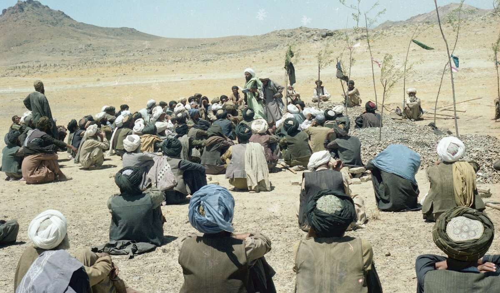
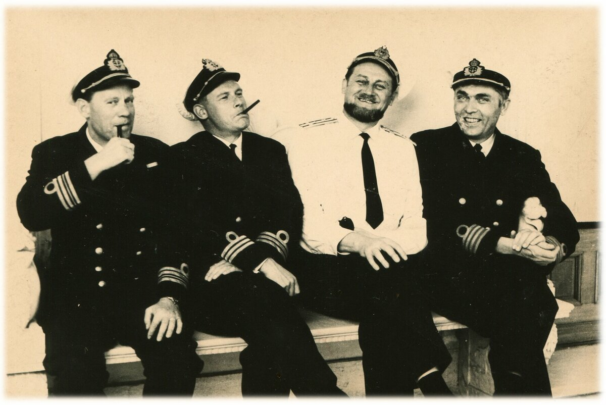

Материалы к проектам
Спецпроект документального фильма «Афган, без вести пропавшие»
Список бывших советских военнослужащих, пропавших без вести в 1979-1989 годах на территории Афганистана
| № | Фамилия, имя отчество | г.р | в/зв. | Национ. | Пропал, провинция, дата | Страна | регион | адрес |
|---|---|---|---|---|---|---|---|---|
| 1 | Абдулгапуров Магомед Камиль Магомедович | 1964 | ряд | аварец | Каписа 09.09.1984 | Россия | Дагестан | Хасавюртовский р-н, с.Октябрьское |
| 2 | Абдулазизов Анатолий Убайдулаевич | 1966 | с-т | узбек | Фарах | Узбекистан | Фергана | |
| 3 | Абдулин Гасмула Хайбулинович | 1962 | с-т | башкир | Кабул 06.08.1982 | Россия | Челябинская | Аргаяшский р-н, д.М.Утраково |
| 4 | Абдулрахманов Сахиб Зейнаб-оглы | 1968 | с-т | азербайдж | Бадахшан 10.07.1988 | Азербайджан | Кубинский р-н, с.Рустов, с.Гам-Гам | |
| 5 | Абдурашидов Юсуф Абдулагаевич | 1960 | ряд | табасара | Парван Руха 05.07.1982 | Россия | Дагестан | Табасаранский р-н с.Дюбек |
| 6 | Абрамченков Игорь Николаеввич | 1966 | ряд | русский | Парван 09.06.1986 | Россия | Московская область | г.Наро-Фоминск |
| 7 | Аброськин Валерий Анатольевич | 1965 | ряд | русский | Джаузджан 17.04.1985 | Узбекистан | г.Алмалык | |
| 8 | Акильбеков Искандер Джиенбекович | 1964 | ряд | казах | Парван 24.06.1984 | Узбекистан | Ташкентская обл | Чирчикский р-н, к-з"Дустлик" |
| 9 | Александров Юрий Дмитриевич | 1962 | ряд | русский | Парван, Панджшер 08.09.1982 | Россия | Тамбов | |
| 10 | Алексеев Сергей Игоревич | 1956 | ст.л-т | русский | Кабул 16.03.1983 | Украина | Львов | |
| 11 | Алиханов Алихан Ремиханович | 1966 | ряд | лезгин | Парван,р. Панджшер 06.07.1985 | Россия | Дагестан | Хивинский р-н, с.Цнал |
| 12 | Альботов Рамазан Шахимович | 1966 | с-т | абазин | Герат25.07.85 | Россия | Карачаево- Черкесия | Хабезский р-н, а.Инжин-Чукун |
| 13 | Аляпин Николай Самуилович | 1965 | ряд | русский | Логар 04.05.1984 | Россия | Тверская | п.Комсомольский |
| 14 | Аманов Уктам Туйчиевич | 1963 | ряд | узбек | Герат 14.04.1983 | Узбекистан | Пайарыкский р-н, с/с.Санаатский, к.Сартавул | |
| 15 | Анапин Мурад Салимович | 1962 | ряд | казах | Баглан 29.06.1981 | Казахстан | Актюбинская | Темирский р-н, с-з"Дружба", отд.2 |
| 16 | Ануфриев Михаил Викторович | 1961 | с-т | русский | Парван 02.07.1982 | Таджикистан | Гиссарский р-н, п/о Шарора | |
| 17 | Арефьев Александр Иванович | 1960 | ряд | русский | Кабул 27.08.1980 | Россия | Ульяновская область | г.Ульяновск |
| 18 | Арслангареев Ирек Уралович | 1969 | ряд | башкир | Баглан 28.02.1986 | Россия | Башкирия | Зианчукский р-н, с.Идельбаково |
| 19 | Архипов Владимир Николаевич | 1960 | с-т | русский | Балх, Хайратон 14.10.1980 | Россия | Тамбовская | Староюрьевский р-н, с.Вишневое |
| 20 | Асанов Хайдулла Сафиевич | 1963 | ряд | татарин | Балх 31.12.84, ОВК-3.12.84 | Россия | Пензенская | Лопатинский р-н, с.Вершаут |
| 21 | Бабило Михаил Иванович | 1958 | л-т | белорус | Парван 08.06.1981 | Белоруссия | Гродненская | Зельвенский р-н, п.Октябрьский |
| 22 | Базаров Кенжа Джабарович | 1961 | с-т | узбек | Парван 19.04.1980 | Узбекистан | Бухарская | г.Каган, |
| 23 | Базаров Уктам Бектошевич | 1964 | с-т | узбек | Парван 6.06.1983 | Узбекистан | Камашинский р-н, с-з Карла Маркса | |
| 24 | Байкеев Наиль Фаридович | 1961 | ряд | татарин | Кундуз 06.03.1983 | Россия | г.Санкт-Петербург | |
| 25 | Байматов Одилжон Сайдазимович | 1960 | ряд | узбек | Герат 18.04.1980 | Узбекистан | Андижанская | Шахриханский р-н, с/с Хакиат, к.Сарай |
| 26 | Баймурадов Берикбай Хамдамович | 1961 | ряд | узбек | Тахар 13.04.1980 | Узбекистан | Джизакская | Галляаральский р-н, к.Болгали |
| 27 | Бакиев Марат Шамсутдинович | 1966 | ряд | татарин | Кундуз 26.12.1984 | Россия | Омская | Усть-Ишимский р-н, п.М.Бича |
| 28 | Бакулин Григорий Владимирович | 1949 | служ | украинец | Кабул 09.05.1986 | Украина | Донецкая | г.Енакиево |
| 29 | Бакыев Базар Атдаевич | 1965 | ряд | туркмен | Логар 21.05.1985 | Туркменистан | Марыйский р-н, к-з "Акалтын" | |
| 31 | Банацкий Николай Николаевич | 1960 | ряд | украинец | Герат 08.03.1980 | Украина | Ровенская | Костопольский р-н, с.Большая Любаша |
| 32 | Баранов Александр Николаевич | 1961 | ст.л-т | русский | Вардак 02.10.1986 | Россия | Пермь | |
| 33 | Барковский Владимир Васильевич | 1959 | ряд | русский | Кундуз 10.05.1980 | Казахстан | Северо- Казахстанская | г.Петропавловск |
| 34 | Барышев Юрий Павлович | 1964 | с-т | русский | Кандагар, Лаль-Мухаммед 07.04.1984 | Россия | Томская | Колпашевский р-н, с.Инкино |
| 35 | Бекболатов Куата Нурмукашевич | 1963 | ряд | казах | Парван 10.03.1982 | Казахстан | Талды -Курган | Алакульский р-н, с.Учарал |
| 36 | Белекчи Иван Евгеньевич | 1962 | ряд | молдаван | Кундуз 23.07.1982 | Молдова | Вулканештский р-н, с.Чишмикой | |
| 37 | Белицкий Виктор Павлович | 1963 | ряд | белорус | Кабул 23.03.1984 | Белоруссия | Минская | г.Солигорск, |
| 38 | Белокуров Игорь Викторович | 1963 | пр-к | украинец | Кандагар 09.04.1988 | Украина | Волынская | Любешевский р-н, с.Великая Глуша |
| 39 | Бенедюк Петр Николаевич | 1959 | с-т | украинец | Нангархар 25.05.1980 | Украина | Житомирская | Червоноармейский р-н, с.Пулино-Гута |
| 40 | Березанский Павел Николаевич | 1964 | с-т | украинец | Герат 23.08.1984 | Украина | Киевская | г.Васильков |
| 41 | Боканов Сергей Вячеславович | 1961 | с-т | русский | Парван 15.04.1981 | Россия | Нижегородская | Кстовский р-н, д.Чернуха |
| 42 | Болтобаев Акрамжон Махмудович | 1965 | ряд | узбек | Фарах 15.05.1985 | Узбекистан | Ферганская | Риштанский р-н, с.Ак-ер |
| 43 | Бомбар Александр Михайлович | 1964 | с-т | украинец | Саманган 31.12.1982 | Украина | Одесская | Коминтерновский р-н, с.Широкое |
| 44 | Бондарев Сергей Николаевич | 1964 | ряд | белорус | Баглан 20.07.1983 | Таджикистан | г.Нурек | |
| 45 | Боровиков Владимир Ильич | 1963 | ряд | русский | Кабул 19.08.1982 | Россия | Тверская | г.Вышний Волочек, |
| 46 | Бородин Михаил Иванович | 1945 | п/п-к | русский | Пактика 16.05.1983 | Россия | Тюмень | |
| 47 | Бридун Владимир Михайлович | 1961 | ряд | украинец | Кундуз 08.06.1980 | Украина | Тернопольская | Бережанский р-н, с.Нараев |
| 48 | Бугаенко Валерий Петрович | 1966 | ряд | украинец | Нангархар 02.10.1985 | Украина | Днепропетров ская | Пятихатский р-н, с.Саевка |
| 49 | Буза Александр Николаевич | 1967 | ряд | белорус | Кунар 30.03.1986 | Белоруссия | Брестская | г.Барановичи |
| 50 | Бутаев Тофик Гидаят-оглы | 1961 | ряд | азербайдж | Кунар 11.05.1980 | Азербайджан | Баку | п.Бакытханова |
| 51 | Бык Виктор Константинович | 1966 | ряд | украинец | Джаузджан 10.04.1987 | Украина | Луганская | Меловский р-н, с.Диброво |
| 52 | Быков Юрий Петрович | 1962 | ряд | русский | Баглан 24.06.1981 | Россия | Татарстан | г.Набережные Челны |
| 53 | Валиуллин Марат Шамсулович | 1960 | ряд | башкир | Нангархар 25.05.1980 | Россия | Башкирия | г.Янаул |
| 54 | Варварян Михаил Арамович | 1960 | ряд | армянин | Баглан 19.03.1982 | Армения | г.Абовян, | |
| 55 | Васильев Владимир Петрович | 1960 | с-т | чуваш | Пактия 10.04.1980 | Россия | Чувашия | г.Чебоксары |
| 56 | Васильев Николай Алексеевич | 1961 | ряд | русский | Герат 15.11.1983 | Россия | Тюменская | Заводоуковский р-н, д.Колесниково |
| 57 | Васильковский Иван Петрович | 1965 | ряд | молдаванин | Балх 04.05.1984 | Молдова | Сынжерейский р-н, с.Бурсучены | |
| 58 | Винников Геннадий Филипович | 1967 | ряд | русский | Пактия 13.04.1986 | Россия | Волгоградская | Нехаевский р-н, с-з "Роднички" |
| 59 | Виноградов Андрей Николаевич | 1964 | ряд | русский | Парван 17.12.1984 | Россия | Московская область | г.Кашира-2 |
| 60 | Виноградов Сергей Михайлович | 1965 | ряд | русский | Баглан 25.06.1985 | Россия | Новосибирская | Тогучинский р-н, п.Горный |
| 61 | Воронцов Сергей Вадимович | 1965 | ряд | мари | Парван 12.07.1985 | Россия | Мари-Эл | г.Йошкар-Ола |
| 62 | Ворсин Павел Георгиевич | 1964 | с-т | русский | Каписа 05.09.1984 | Россия | Читинская | Могочинский р-н, п.Давенда |
| 63 | Габараев Константин Иналович | 1962 | с-т | осетин | Саманган Ташкурган 19.09.1982 | Россия | Москва | |
| 64 | Галатов Убайдулла Галатович | 1959 | м с-т | узбек | Нангархар 03.07.1981 | Узбекистан | Узбекистан | Андижанская обл., Ходжаабадский р-н, к-з им.Бобур |
| 65 | Галоев Станислав Кезоевич | 1960 | ряд | осетин | Кундуз 05.06.1980 | Россия | Сев.Осетия | г.Владикавказ |
| 66 | Галуза Павел Александрович | 1966 | ряд | русский | Газни 18.09.1985 | Россия | Омская | Любинский р-н, с.Пролетарский |
| 67 | Галямочкин Александр Витальевич | 1959 | с-т | русский | Нангархар или Балх | Россия | Ивановская | Юрьевецкий р-н, д.Пелевино |
| 68 | Гамбаров Хамбал Ахнафович | 1959 | ряд | татарин | Балх 27.05.1980 | Казахстан | Тургайская | г.Аркалык |
| 69 | Ганжа Иван Павлович | 1961 | ряд | украинец | Баглан 20.11.1981 | Украина | Черкасская | Чигиринский р-н, с.Ивковцы |
| 70 | Гапонов Владимир Анатольевич | 1964 | ряд | русский | Баглан 16.11.1983 | Украина | Крым | Раздолненский р-н, с.Чернышово |
| 71 | Гарайханов Ильшат Василович | 1962 | ряд | татарин | Бамиан 25.08.1982 | Россия | Татарстан | Набережные Челны |
| 72 | Гедиров Гедир Бафадар-оглы | 1961 | ряд | азербайд | Герат 08.03.1980 | Азербайджан | г.Сумгаит | |
| 73 | Гейдаров Физули Фиридун-оглы | 1965 | ряд | азербайд | Бадахшан 10.07.1984 | Азербайджан | Бардинский р-н с.Кеталпарах | |
| 74 | Гелетчак Игорь Степанович | 1964 | ряд | украинец | Фарьяб 13.07.1985 | Украина | Львов | |
| 75 | Гибадуллин Артур Адипович | 1963 | ряд | татарин | Кандагар 11.05.1985 | Россия | Башкирия | Белорецкий р-н п/о Тирлян-2 |
| 76 | Головченко Валерий Викторович | 1962 | ряд | украинец | Баглан 15.03.1982 | Украина | Житомирская | Бердичевский р-н, п.Гришковцы |
| 77 | Голышин Валерий Александрович | 1966 | ряд | русский | Бадахшан 11.09.1985 | Россия | Коми | г.Воркута |
| 78 | Горбань Владимир Андреевич | 1956 | л-т | русский | Бадахшан 07.06.1980 | Украина | Черкасская | г.Корсунь- Шевченковский |
| 79 | Горбунов Евгений Александрович | 1962 | ряд | русский | Джаузджан, Джиза 07.11.1981 | Россия | Иркутская | г.Усть-Илимск |
| 80 | Григорцевич Сергей Викторович | 1961 | с-т | русский | Нангархар 23.12.1980 | Россия | Ростовская | г.Шахты |
| 81 | Громов Андрей Юрьевич | 1964 | ряд | русский | Кабул 27.06.1983 | Россия | Карелия | п.Лоухи |
| 82 | Грынык Игорь Ильич | 1961 | ряд | украинец | Фарьяб 30.09.1982 | Украина | Львовская | Яворский р-н с.Шкло |
| 83 | Грязнов Виктор Иванович | 1960 | ряд | русский | Саманган 07.01.1981 | Казахстан | Карагандинская | г.Темиртау |
| 84 | Гусейнов Алигусейн Агагусейн-оглы | 1965 | ряд | азербайд | Кабул 21.08.1984 | Азербайджан | Давичинский р-н, с.Шахнарзарли | |
| 85 | Гуцал Иван Владимирович | 1960 | ряд | украинец | Кундуз 08.06.1980 | Украина | Тернопольская | Гусятинский р-н, п.Хоростков |
| 86 | Давид Георгий Васильевич | 1964 | ряд | молдаван | Балх 28.07.1983 | Молдова | Кантемировский р-н, с.Готешты | |
| 87 | Данилюк Александр Васильевич | 1961 | ряд | украинец | Кундуз 13.03.1980 | Украина | Винница | |
| 88 | Девиченко Александр Владимирович | 1967 | с-т | русский | Кандагар 24.12.1985 | Россия | Ленинградская | г.Санкт-Петербург, п.Понтонный |
| 89 | Денисов Игорь Александрович | 1960 | с-т | русский | Нангархар 04.04.1980 | Россия | Пензенская | г.Пенза-5 |
| 90 | Деркун Игорь Анатольевич | 1965 | ряд | русский | Нангархар 12.02.1985 | Россия | Р.Бурятия | Баргузинский р-н п.Юбилейный |
| 91 | Джумаков Розыкулы | 1963 | ряд | туркмен | Герат 03.09.1981 | Туркменистан | Чарджоу | Дейнауский р-н, к-з "21 партсъезда" |
| 92 | Джураев Курбан Уракович | 1960 | ряд | узбек | Кунар 11.06.1980 | Узбекистан | Кашкадарьин ская | Гузарский р-н, с.Эскибан |
| 93 | Дмитриченко Андрей Васильевич | 1963 | ряд | украинец | Бадахшан 01.08.1984 | Украина | Запорожская | г.Бердянск |
| 94 | Дурнев Николай Александрович | 1963 | ряд | белорусс | Кундуз 12.03.1983 | Белоруссия | Минская | Узденский р-н, п.Узда |
| 95 | Духовченко Виктор Васильевич | 1954 | служ | украинец | Парван 01.01.1985 | Украина | Запорожская | г.Запорожье-39 |
| 96 | Евтухович Олег Александрович | 1958 | л-т | белорус | Тахар или Пактия 10.04.1980 | Белоруссия | Минск | |
| 97 | Еговцев Александр Александрович | 1962 | с-т | русский | Газни 15.07.1982 | Россия | г.Санкт-Петербург | |
| 98 | Еременко Николай Валентинович | 1967 | ряд | русский | Логар 01.01.1987 | Россия | Новосибирская | Коченевский р-н ст.Чик с.Прокудка |
| 99 | Ермаков Юрий Петрович | 1967 | ряд | русский | Парван 18.06.1986 | Россия | Красноярский край | 662103Ачинский р-н, д.Березовка |
| 100 | Ермошин Анатолий Петрович | 1961 | л-т | русский | Фарах 19.06.1986 | Россия | Рязань | |
| 101 | Житняковский Виктор Юльянович | 1961 | с-т | поляк | Нангархар 11.02.1985 | Украина | Луганская | Первомайский р-н, п.Светличное |
| 102 | Жуков Олег Павлович | 1962 | с-т | русский | Кундуз 06.10.1982 | Россия | Ростовская | г.Донецк |
| 103 | Жумагулов Балагазы Узбекович | 1963 | ряд | казах | Кабул 24.07.1982 | Казахстан | Кустанайская | Кустанайский р-н, с.Организатор п.Жаксалык |
| 104 | Журавлев Юрий Андреевич | 1935 | п/п-к | русский | Тахар-Кундуз 05.01.1980 | Россия | Курская | г.Курск |
| 105 | Жутаутас Альвидас Константинович | 1966 | ряд | литовец | Нангархар 17.12.1986 | Латвия | Сулдусский р-н, п/о Грезе | |
| 106 | Заитов Ибрагим Максудович | 1962 | ряд | узбек | Нангархар 23.01.1983 | Узбекистан | Кашкадарьин- ская | г.Китаб |
| 107 | Захаров Анатолий Михайлович | 1963 | ряд | русский | Кундуз 23.07.1982 | Мордовия | Рузаевский р-н с.Труслякай | |
| 108 | Заяц Николай Леонидович | 1946 | п/п-к | украинец | Кундуз 15.03.1984 | Украина | г.Владимир- Волынский | |
| 109 | Звонов Григорий Михайлович | 1959 | ряд | русский | Герат 21.10.1980 | Россия | Смоленская | г.Вязьма |
| 110 | Земсков Анатолий Алексеевич | 1960 | с-т | русский | Кундуз 14.04.1980, ОВК-10.05.80 | Россия | Пензенская | Лунинский р-н, с.Манторово |
| 111 | Зимонтовский Петр Алексеевич | с-т | немец | Бадахшан 23.06.1980 | Киргизия | г.Сокулук. | ||
| 112 | Зрячев Андрей Анатольевич | 1966 | ряд | русский | Герат 03.02.1985 | Россия | Волгоградская | г.Волжский |
| 113 | Зуев Владимир Петрович | 1961 | ряд | русский | Парван 09.10.1980 | Россия | Кировская | Кирово-Чепецкий р-н,п.Радужный |
| 114 | Зупаров Мамуржан Таирович | 1960 | ряд | узбек | Балх 21.06.1980 | Узбекистан | Ташкент | г.Ташкент |
| 115 | Игонин Владислав Васильевич | 1965 | ряд | русский | Герат 08.10.1984 | Россия | Самарская | Кинельский р-н, с.Сырейка |
| 116 | Искаков Ораз Мухамеджанович | 1961 | ряд | казах | Каписа 12.03.1982 | Казахстан | Джамбульская | Сарысуский р-н с.Байкадам |
| 117 | Исламов Салават Михайлович | 1963 | с-т | татарин | Балх 16.12.1982 | Узбекистан | Бухара | г.Бухара |
| 118 | Исматов Нусратилло Изагулаевич | 1960 | ряд | узбек | Фарах 17.07.1980 | Узбекистан | Ташкентская обл | г.Ташкент |
| 119 | Казюк Алексей Евгеньевич | 1966 | ряд | украинец | Баглан 19.07.1986 | Украина | Донецкая | Александровский р-н, с.Дмитро-Дарьевка |
| 120 | Караболаев Токмуханбек Тлепович | 1959 | ряд | казах | Кабул 27.06.1980 | Казахстан | Алма-Ата | Нарынкольский р-н, с.Шалкуде |
| 121 | Карагезян Давид Ромович | 1962 | ряд | армянин | Баглан 15.12.1981 | Туркменистан | Ашхабад | г.Ашхабад, Гаудан |
| 122 | Карпенко Валерий Петрович | 1961 | пр-к | украинец | Пактия 01.05.1988 | Украина | Винница | г.Винница |
| 123 | Каширов Владимир Николаевич | 1961 | ряд | русский | Баглан, Хинджан 06.12.1983 | Россия | Свердловская | г.Краснотурьинск |
| 124 | Кашлаков Геннадий Анатольевич | 1958 | мл.л-т | русский | Тахар-Кундуз 05.01.1980 | Россия | Ростовская | Боковский р-н пос Краснозоринский |
| 125 | Кирюшкин Герман Васильевич | 1962 | мл.л-т | русский | Пактика 16.05.1983 | Россия | Московская область | Ленинский р-н, городок Писателей |
| 126 | Киселев Валерий Юрьевич | 1962 | ряд | русский | Парван 18.02.1982 | Россия | Пензенская | г.Пенза |
| 127 | Клюба Ярослав Родионович | 1964 | ряд | украинец | Бадахшан 30.04.1984 | Украина | Ивано- Франковская | Галичский р-н, с.Дитятин |
| 128 | Коваленко Игорь Михайлович | 1966 | ряд | украинец | Нангархар 17.12.1986 | Украина | Кировоградская | г.Александрия |
| 129 | Козлов Дмитрий Дмитриевич | 1966 | удмурт | Пактия 08.05.1985 | Белоруссия | Могилевская обл. | Могилевская обл., Глусский р-н, дер.Подзамша | |
| 130 | Козурак Роман Васильевич | 1962 | с-т | украинец | Кабул 08.08.1982 | Украина | Закарпатская | г.Ряхов |
| 131 | Козурин Николай Николаевич | 1960 | с-т | русский | Парван 30.08.1980 | Украина | Луганская | г.Рубежное |
| 132 | Комеков Алламурад Сапарлыевич | 1960 | ряд | туркмен | Кунар 11.05.1980 | Туркменистан | Марыйская | Марыйский р-н, с/с Пашан-Али |
| 133 | Корнев Алексей Константинович | 1962 | ряд | русский | Герат 27.10.1981 | Россия | Тамбовская | Инжавинский р-н с.Красивка |
| 134 | Коробчук Петр Степанович | 1961 | ряд | украинец | Кундуз 26.04.1980 | Украина | Хмельницкая | г.Славута |
| 135 | Котелин Сергей Васильевич | 1961 | ряд | русский | Кабул 28.06.1982 | Казахстан | Семипалатин- ская | г.Аягуз |
| 136 | Кочкоров Оразали Токтоназарович | 1963 | ряд | киргиз | Герат 14.04.1983 | Киргизия | Ошская | Ленинский р-н, с.Сокалды |
| 137 | Краличик Александр Иосифович | 1961 | ряд | чех | Герат 18.04.1980 | Украина | Запорожская | Мелитопольский р-н, с.Новогородовка |
| 138 | Кривоносов Алексей Петрович | 1963 | л-т | русский | Парван 24.07.1985 | Россия | Алтайский | Бурлинский р-н, с.Бурла |
| 139 | Крылов Вадим Анатольевич | 1963 | ряд | русский | Герат 07.07.1984 | Россия | Москва | г.Москва |
| 140 | Кубаев Берик Утемисович | 1960 | ряд | казах | Балх 27.06.1980 | Казахстан | Гурьевская | Денгизский р-н, с.Ганушкино |
| 141 | Кубинец Иван Юрьевич | 1960 | ряд | украинец | Нангархар 31.03.1980 | Украина | Закарпатская | Тячевский р-н с.Новоселица |
| 142 | Кудайбергенов Нурбек Шамшидинович | 1959 | с-т | киргиз | Бадахшан 18.04.1980 | Киргизия | г.Бишкек | |
| 143 | Кузьмич Иван Степанович | 1960 | с-т | украинец | Кундуз 08.06.1980 | Украина | Волынская | Гороховский р-н с.Подберезье |
| 144 | Кукушкин Юрий Евгеньевич | 1959 | с-т | русский | Кунар (Джелалабад) 11.05.1980 | Россия | Нижегородская | г.Нижний Новгород |
| 145 | Куницын Серафим Тихонович | 1941 | п/п-к, советник | русский | сведений нет 13.05.1980 | Молдова | г.Кагул-2 | |
| 146 | Курчин Виталий Григорьевич | 1964 | ряд | украинец | Парван 04.07.1983 | Украина | Луганская | г.Северодонецк |
| 147 | Кутлимуратов Эргаш Узакбаевич | 1962 | ряд | узбек | Кундуз 20.05.1982 | Узбекистан | Каракалпатская | г.Ходжейли, ул.Агахи, 43 |
| 148 | Лазаренко Василий Егорович | 1963 | ряд | белорусс | Баглан 28.10.1982 | Белоруссия | Витебская | Россонский р-н д.Краснополье |
| 149 | Лапшин Сергей Иванович | 1963 | ряд | русский | Кабул 21.11.1982 | Россия | Оренбургская | Абдулинский р-н с.Емантаево |
| 150 | Лебедев Александр Геннадьевич | 1966 | ряд | русский | Урузган, Чераг 17.11.1985 | Россия | Мари-Эл | г.Йошкар-Ола |
| 151 | Лопатик Максим Борисович | 1964 | с-т | русский | Герат 16.09.1986 | Россия | Москва | г.Зеленоград |
| 152 | Лукьянов Олег Михайлович | 1962 | ряд | русский | Герат 29.11.1981 | Россия | Костромская | г.Буй |
| 153 | Майсупов Мухтар Алибаевич | 1962 | ряд | таджик | Кабул 22.04.1981 | Узбекистан | Ташкентская | г.Ангрен |
| 154 | Малышев Александр Сергеевич | 1965 | ряд | русский | Парван 12.09.1984 | Россия | Вологодская | г.Сокол-2 |
| 155 | Марченко Владимир Николаевич | 1963 | ряд | русский | Логар 07.08.1981 | Россия | Краснодарский | Теучежский р-н х.Шевченко |
| 156 | Матвеев Александр Алексеевич | 1963 | ефрейтор | русский | Бадахшан, Файзабад 31.07.1982 | Россия | Волгоградская | Камышинский р-н, с.Соломатино |
| 157 | Махмадназаров Хазрат Аблакумович | 1962 | ряд | таджик | Кундуз 09.01.1982 | Таджикистан | Ленинабадская | Ганчинский р-н, п.Ганчи, |
| 158 | Мещеряков Сергей Николаевич | 1962 | ряд | русский | Парван 03.06.1982 | Россия | Воронежская | г.Воронеж |
| 159 | Миколайчук Николай Владимирович | 1964 | ряд | украинец | Парван 02.05.1983 | Украина | Ровенская | Корецкий р-н, с.Сторожев |
| 160 | Милосердов Анатолий Борисович | 1963 | ряд | русский | Кундуз 28.04.1982 | Узбекистан | г.Галляарал | |
| 161 | Михайлюк Олег Иванович | 1966 | ряд | украинец | Герат 11.09.1984 | Украина | Киевская | Киево-Святошинский р-н с.Мироцкое |
| 162 | Мишанов Юрий Владимирович | 1967 | ряд | русский | Парван 03.08.1987 | Казахстан | Чимкент | г.Чимкент |
| 163 | Москалев Иван Васильевич | 1961 | ряд | коми-пермяк | Кабул 02.04.1982 | Россия | Пермь | п.Гайны-1 |
| 164 | Москвинов Дмитрий Владимирович | 1966 | ряд | русский | Кунар, Пашат 30.03.1986 | Россия | Москва | г.Москва |
| 165 | Московчук Юрий Алексеевич | 1947 | м-р | украинец | Нангархар 15.06.1981 | Казахстан | Талды- Курганская | Алакульский р-н, п.Учарал |
| 166 | Моторя Валерий Васильевич | 1962 | ряд | украинец | Кабул 28.06.1982 | Украина | Днепропетров- ская | г. Днепропетровск |
| 167 | Мухин Вячеслав Владимирович | 1965 | ряд | русский | Парван 25.04.1984 | Россия | Саратов | п.Базарный Карабулак |
| 168 | Наумов Павел Михайлович | 1965 | ряд | русский | Нангархар 11.02.1985 | Россия | Москва | г.Москва |
| 169 | Негодяев Николай Александрович | 1962 | ряд | русский | Герат 17.09.1982 | Россия | Московская | Дмитровский р-н, п.Ново-Синьково |
| 170 | Немеш Василий Юрьевич | 1968 | ряд | украинец | Кабул 29.04.1987 | Украина | Закарпатская | Мукачевский р-н, с.Ильковцы |
| 171 | Несмеянов Юрий Серафимович | 1966 | с-т | русский | Герат 14.11.1985 | Россия | Липецкая | г.Грязи |
| 172 | Нестеров Сергей Анатольевич | 1964 | ряд | русский | Кундуз 06.03.1983 | Россия | Ставрополь- ский край | Грачевский р-н, с.Спицевка |
| 173 | Нефедов Андрей Борисович | 1962 | ряд | русский | Логар 16.08.1984 | Россия | Москва | г.Москва |
| 174 | Нечаев Александр Максимович | 1963 | с-т | русский | Парван 27.10.1982 | Россия | Рязань | Кораблинский р-н, с.Незнаново |
| 175 | Нечипоренко Николай Иванович | 1965 | ряд | украинец | Кабул 01.08.1984 | Украина | Сумская | Белопольский р-н, с.Виры |
| 176 | Новиков Игорь Евгеньевич | 1965 | ряд | русский | Нангархар 23.01.1984 | Россия | Московская | г.Сергиев-Посад |
| 177 | Нурматов Абдумажид Эргашевич | 1965 | ряд | узбек | Кандагар 07.04.1984 | Узбекистан | Ташкент | Янгиюльский р-н, с/с Ниязбаш |
| 178 | Обласов Сергей Михайлович | 1963 | ряд | русский | Герат 21.11.1983 | Украина | Чернигов | г.Чернигов |
| 179 | Овчаренко Сергей Васильевич | 1961 | л-т | русский | Кабул 22.03.1984 | Россия | Челябинск | г.Челябинск |
| 180 | Оконечников Сергей Геннадьевич | 1958 | пр-к | русский | Баглан 25.06.1985 | Казахстан | Семипалатин ская | г.Аягуз, Южный городок |
| 181 | Оленников Юрий Николаевич | 1963 | с-т | русский | Кабул 22.03.1984 | Россия | Бурятия | г.Улан-Удэ |
| 182 | Павлютенков Николай Николаевич | 1962 | ряд | русский | Парван 31.08.1982 | Россия | Ставропольский | г.Невинномысск |
| 183 | Паксяев Сергей Иванович | 1963 | с-т | русский | Нангархар 17.01.1983 | Россия | Пензенская | Городищенский р-н г.Сурск |
| 184 | Панасенко Александр Александрович | 1961 | с-т | русский | Парван 06.02.1982 | Россия | Ульяновская | г.Димитровград |
| 185 | Пантелюк Сергей Иванович | 1962 | ст.л-т | русский | Кунар 28.10.1987 | Россия | Ростовская | г.Батайск, Авиагородок |
| 186 | Петров Всеволод Кирилович | 1965 | ряд | русский | Кабул 04.12.1984 | Россия | Новгородская | г.Новгород |
| 187 | Петров Николай Иванович | 1964 | ряд | чуваш | Герат 29.12.1982 | Россия | Чувашия | Канашский р-н, д.Б.Бикшихи, Кирпичный завод |
| 188 | Петровский Виктор Александрович | 1960 | ряд | украинец | Бадахшан 03.05.1980 | Украина | Днепропетров ская | г.Новомосковск |
| 189 | Пилипец Виктор Николаевич | 1963 | ряд | украинец | Баглан 03.02.1982 | Украина | Сумская | Шосткинский р-н с.Клишки |
| 190 | Плохов Сергей Иванович | 1964 | ряд | русский | Кабул 08.10.1983 | Россия | Нижегородская | г.Нижний Новгород |
| 191 | Подаруев Николай Анатольевич | 1960 | ряд | русский | Баглан 27.06.1981 | Украина | Херсон | г.Херсон |
| 192 | Подшивайло Игорь Константинович | 1964 | с-т | русский | Кабул 30.09.1983 | Украина | Харьковская | Харьковский р-н с.Лукьянцы |
| 193 | Полывян Николай Михайлович | 1964 | ряд | украинец | Лагман 21.06.1983 | Украина | Черниговская | Коропский р-н, с.Жовтневое |
| 194 | Попов Александр Геннадьевич | 1966 | ряд | украинец | Кундуз 30.06.1985 | Украина | Кировоградская | Новоархангельский р-н с.Подвысокое |
| 195 | Пучков Юрий Николаевич | 1960 | с-т | русский | Саманган 19.09.1982 | Россия | Волгоградская | г.Волгоград |
| 196 | Раджабов Даврон Муратович | 1965 | ряд | узбек | Нангархар 02.10.1985 | Узбекистан | Бухарская | Гиждуванский р-н, к-з "Калинина" к.Мазраган |
| 197 | Раджабов Насриддин Мирзоназарович | 1962 | с-т | таджик | Газни 31.12.1983 | Узбекистан | Сурхандарьинс кая | Денаузский р-н к-з им.Ленина |
| 198 | Размыслов Андрей Вениаминович | 1966 | ряд | коми | Парван 27.06.1985 | Россия | Р.Коми | Сыктывдинский р-н с.Палевицы Центральная усадьба |
| 199 | Рахимкулов Радик Раисович | 1961 | ряд | татарин | Пактия 10.04.1980 | Россия | Башкирия | Туймазинский р-н п.Кандры |
| 200 | Ревенко Сергей Мефодиевич | 1961 | с-т | украинец | Кундуз 08.06.1980 | Украина | Винница | Песчанский р-н с.Кукулы |
| 201 | Роман Игорь Ярославович | 1960 | ряд | украинец | Кундуз 12.04.1980 | Украина | Львовская | Стрыйский р-н, с.Грабовцы |
| 202 | Рощупкин Алексей Васильевич | 1963 | с-т | русский | Парван 13.11.1983 | Россия | Липецкая | Елецкий р-н, д.Б.Александровка |
| 203 | Рязанцев Сергей Егорович | 1963 | с-т | русский | Кабул 26.07.1983 | Украина | Донецкая | п.Горловка, п.Зайцево |
| 204 | Сабуров Сергей Васильевич | 1960 | л-т | хакас | Пактия 16.12.1982 | Узбекистан | Ташкентская | г.Чирчик-17 |
| 205 | Сайфутдинов Равиль Мунавирович | 1961 | ряд | татарин | Балх 00.09.1982 | Россия | Пермская | Октябрьский р-н, д.Большой Сарс |
| 206 | Сергеев Евгений Николаевич | 1966 | ряд | русский | Логар 10.09.1984 | Россия | Чувашия | г.Шумерля |
| 207 | Сигляр Юрий Викторович | 1966 | с-т | русский | Кундуз 20.02.1986 | Россия | Краснодар | г.Краснодар |
| 208 | Синяк Игорь Васильевич | 1962 | ряд | белорусс | Нимроз 18.10.1981 | Белоруссия | Минск | |
| 209 | Ситников Геннадий Яковлевич | 1966 | ряд | русский | Нангархар н.п.Хувайзи, р. Кабул 11.02.1985 | Россия | Свердловская | Сухоложский р-н д.Маханово |
| 210 | Смирнов Вадим Витиславович | 1963 | с-т | русский | Лагман 21.06.1983 | Россия | Москва | г.Москва |
| 211 | Смирнов Евгений Юрьевич | 1964 | ряд | русский | Гильменд 17.09.1984 | Россия | Ленинград | г.Санкт-Петербург |
| 212 | Соколов Валентин Валентинович | 1966 | ряд | русский | Кунар 24.05.1985 | Россия | Ленинград | г.Санкт-Петербург |
| 213 | Соколов Николай Владимирович | 1960 | ряд | русский | Герат 18.04.1980 | Россия | Краснодарский | Динский р-н ст.Динская |
| 214 | Старков Сергей Леонидович | 1960 | ст.л-т | русский | Баглан 15.08.1982 | Таджикистан | Ленинабад | Кайраккумский горсовет п.Адрасман |
| 215 | Степаненко Илья Васильевич | 1961 | ст.л-т | русский | Кунар 05.08.1985 | Россия | Новосибирск | г.Новосибирск |
| 216 | Сушинский Олег Николаевич | 1959 | с-т | украинец | Парван 11.06.1980 | Украина | г.Хмельницкий | |
| 217 | Сытась Виктор Николаевич | 1961 | пр-к | русский | Парван 01.12.1983 | Россия | Брянская | Почепский р-н, п/о Красный Рог |
| 218 | Сычевский Владимир Петрович | 1968 | с-т | украинец | Нангархар 15.09.1987 | Украина | Черкасская | г.Смела |
| 219 | Табаков Михаил Андреевич | 1960 | с-т | русский | Кунар 29.02.1980 | Россия | Ульяновская | г.Ульяновск |
| 220 | Талашкевич Анатолий Александрович | 1964 | ряд | белорусс | Парван 13.11.1983 | Белоруссия | Брестская | Пружанский р-н, д.Россохи, п/о Хорева |
| 221 | Ташпулатов Уктам Махкамович | 1963 | ряд | таджик | Кандагар 07.06.1982 | Узбекистан | Ташкентская | Орджоникидзевский р-н /с Чинабад |
| 222 | Титов Андрей Иванович | 1967 | ряд | русский | Фарах 20.09.1985 | Россия | Московская | Рузский р-н, п.Колюбакино |
| 223 | Ткаченко Олег Анатольевич | 1962 | ряд | русский | Логар 07.08.1981 | Россия | Краснодарский | г.Армавир |
| 224 | Толстиков Юрий Владимирович | 1961 | с-т | русский | Парван 06.06.1981 | Россия | Красноярский | г.Красноярск |
| 225 | Трофименко Виктор Владимирович | 1963 | ряд | русский | Логар 07.08.1981 | Россия | Краснодарский край | Крымский р-н, ст.Троицкая |
| 226 | Тулендиев Талгат Ерубаевич | 1963 | с-т | узбек | Бадахшан 27.07.1982 | Казахстан | Чимкентская | Тюлькубаевский р-н к-з "Красная Звезда" |
| 227 | Ураков Фазлиддин Азимович | 1967 | ряд | узбек | Парван 19.04.1986 | Узбекистан | Самаркандская | Акдарьинский р-н, с/с Примкентский, с.Пилол |
| 228 | Фалевка Юрий Петрович | 1966 | ряд | украинец | Кундуз 10.08.1985 | Украина | Закарпатская | Виноградовский р-н, с.Чернотисово |
| 229 | Федоров Василий Еремеевич | 1963 | ряд | русский | Парван 10.06.1983 | Казахстан | Целиноградская | Астраханский р-н, ст.Джалтыр |
| 230 | Филиппов Николай Михайлович | 1960 | ряд | русский | Парван 14.04.1980 | Россия | Челябинская | г.Миасс |
| 231 | Фролов Олег Николаевич | 1965 | с-т | русский | Фарах 19.05.1985 | Россия | Белгород | г.Белгород |
| 232 | Хаблак Владимир Валентинович | 1965 | с-т | украинец | Парван 09.01.1985 | Украина | Луганская | Беловодский р-н, с.Городище |
| 233 | Хакимов Бахретдин Шарапович | 1960 | ряд | узбек | Герат 07.09.1980 | Узбекистан | Самаркан | г.Самарканд |
| 234 | Халацкий Николай Данилович | 1943 | пр-к | украинец | Герат 08.01.1983 | Украина | Львовская | г.Стрый |
| 235 | Харитонов Вячеслав Анатольевич | 1969 | ряд | русский | Балх-24.06.88 | Россия | Оренбургская | Тюльганский р-н, с.Новобарангуловка |
| 236 | Харитонов Евгений Иванович | 1960 | ряд | русский | Нангархар 06.07.1980 | Киргизия | Бишкек | г.Бишкек, с.Сокулук |
| 237 | Хахалев Василий Викторович | 1963 | с-т | русский | Герат 09.04.1984 | Россия | Краснодарский | Сочинский р-н, г.Адлер |
| 238 | Худалов Казбек Ахтемирович | 1959 | ст.л-т | осетин | Парван 16.09.1984 | Россия | С.Осетия- Алания | г.Владикавказ |
| 239 | Царенок Игорь Александрович | 1964 | ряд | русский | Кабул 14.01.1984 | Украина | Донецкая | г.Горловка |
| 240 | Челпаченко Николай Александрович | 1962 | ряд | русский | Кабул 15.06.1984 | Россия | Оренбург | г.Оренбург, п.Адамовка |
| 241 | Черненков Михаил Иванович | 1960 | ряд | русский | Нангархар 21.03.1984 | Россия | Краснодарский | г.Абинск |
| 242 | Черников Владимир Петрович | 1945 | пр-к | русский | Балх 28.05.1982 | Россия | Тверская | г.Бологое |
| 243 | Черныш Сергей Владимирович | 1960 | ряд | украинец | Парван 16.04.1980 | Украина | Херсонская | Береславский р-н, с.Меловое |
| 244 | Черняев Андрей Владимирович | 1965 | ряд | русский | Кундуз, Бараки 12.05.1984 | Россия | Ростовская | Неклиновский р-н, с.Ново-Бессергеновка |
| 245 | Чехов Виктор Иранович | 1964 | с-т | осетин | Каписа 05.09.1984 | Россия | Ставропольский | г.Кисловодск |
| 246 | Чупахин Виктор Иванович | 1965 | ряд | русский | Кундуз 14.09.1985 | Россия | Московская | Балашихинский р-н, мкр Дзержинского г.Реутов-1 |
| 247 | Чухлов Сергей Николаевич | 1958 | л-т | русский | Баглан 03.02.1982 | Россия | Ростовская | г.Шахты-4 |
| 248 | Шакиров Ринат Римович | 1963 | с-т | татарин | Парван 24.06.1982 | Узбекистан | Ташкент | г.Ташкент |
| 249 | Шалар Михаил Ильич | 1961 | с-т | молдаван | Кундуз 14.07.1981 | Молдова | Кишинев | г.Кишинев |
| 250 | Шалашов Сергей Владимирович | 1962 | ряд | русский | Баглан 10.04.1983 | Россия | Оренбургская | с.Ташла |
| 251 | Шарафов Эльхан Ахмед-оглы | 1960 | ряд | азербайд | Нангархар 31.03.1980 | Грузия | Марнеульский р-н с.Куртляр | |
| 252 | Шарипов Захиджон Атакулович | 1957 | ряд | узбек | Кабул 29.07.1983 | Узбекистан | Андижанская | г.Кургантепа |
| 253 | Шаяхматов Мухаммал Амержанович | 1960 | ефрейтор | русский | Бадахшан 23.06.1980 | Казахстан | Карагандинская | г.Абай |
| 254 | Швец Виктор Владимирович | 1966 | ряд | украинец | Парван 15.11.1984 | Украина | Крым | г.Красноперекопск |
| 255 | Шевченко Николай Иванович | 1956 | служ | украинец | Герат 10.09.1982 | Украина | Сумская | Великописарев- ский р-н с.Дмитриевка |
| 256 | Шипеев Владимир Иванович | 1963 | ряд | чуваш | Кабул 01.12.1982 | Россия | Чувашия | г.Чебоксары |
| 257 | Ширшов Александр Владимирович | 1963 | ряд | русский | Кандагар 15.07.1982 | Россия | Ярославская | г.Рыбинск |
| 258 | Шкурин Игорь Леонидович | 1964 | ряд | русский | Балх 19.08.1983 | Россия | Самара | г.Самара |
| 259 | Шмаков Александр Владимирович | 1964 | ряд | русский | Герат 16.10.1984 | Россия | Воронежская | Бобровский р-н, с.Хреновое |
| 260 | Шульженко Василий Алексеевич | 1961 | с-т | белорус | Бадахшан 23.06.1980 | Белоруссия | Гомельская | г.Добруш |
| 261 | Щербаков Сергей Николаевич | 1962 | ряд | русский | Кундуз 25.04.1981 | Россия | Москва | г.Москва |
| 262 | Щербина Борис Николаевич | 1964 | ряд | русский | Кундуз 11.11.1982 | Украина | Крым | Джанкойский р-н, с-з "Молодая Гвардия" |
| 263 | Эськов Владимир Алексеевич | 1961 | ряд | русский | Логар 07.08.1981 | Россия | Краснодарский | Брюховецкий р-н ст.Джерелиевская |
| 264 | Южаков Виктор Иванович | 1965 | ряд, водитель | русский | Парван , Баграм 25.04.1984 | Россия | Курганская | 641333Белозерский рн, с.Рычково |
| 265 | Яметов Валерий Данилович | 1966 | ряд | мари | Нангархар 30.12.1985 | Россия | Башкирия | Мишкинский р-н д.Мишкино |
| 266 | Яшин Игорь Николаевич | 1961 | ряд | русский | Баглан 27.06.1981 | Россия | Калужская | г.Малоярославец |
| 267 | Яшков Михаил Михайлович | 1960 | ряд | русский | Кундуз 08.06.1980 | Россия | Приморский | г.Находка |
| # | Name, military rank | Year of birth | Country | Region of loss | Missing since when and under what circumstances |
|---|---|---|---|---|---|
| 1 | Anapin Murad Salimovich, private | 1962 | Kazakhstan | Baghlan | June 29, 1981 Lagged behind a convoy heading for Termaz. According to unconfirmed information, he was staying in the group of Kandag (40км from Charikara), in Gorband. |
| 2 | Arslangareev Irek Uralovich, private | 1969 | Russia | Baghlan | February 28, 1986 |
| 3 | Bondarev Sergey Nikolaevich, private soldier | 1964 | Tajikistan | Baghlan | July 20, 1983 Islamic name: Mohammaduddin (Dinmohammad), presumably at mullah Alama's near the Bullet-humri, in 1986 was [seen] at Ismail Samad's |
| 4 | Bykov Yury Petrovich, private | 1962 | Russia | Baghlan | June 24, 1981 He was a truck driver, at Salang pass his truck broke down, he went to the nearest village to find spare parts, was shot at tea house, the body hasn't been found yet. |
| 5 | Varvaryan Mikhail Aramovich, private | 1960 | Armenia | Baghlan | March 19, 1982 Islamic name: Mohamad Islam, In 82 was in Peshawar, in 83--in a camp of Islamic Society of Afghanistan, gave an interview for the Posev magazine in ’84. Supposedly was in the Badaber camp in Pakistan in 1985 |
| 6 | Vinogradov Sergey Mikhaylovich, private | 1965 | Russia | Baghlan | June 25, 1985 Drowned with the commander of an APC (armoured personnel carrier) ensign S. Okonechnikov when crossing a river. The body has not been found |
| 7 | Ganzha Ivan Pavlovich, private | 1961 | Ukraine | Baghlan | November 20,1981 Was returning to his unit with a convoy. Missing since the convoy was ambushed near Salang |
| 8 | Gaponov Vladimir Anatolyevich, private | 1964 | Ukraine | Baghlan | November 16, 1983 |
| 9 | Golovchenko Valeriy Viktorovich, private | 1962 | Ukraine | Baghlan | |
| 10 | Kazyuk Aleksey Evgenyevich, private | 1966 | Ukraine | Baghlan | July 19,1986 Disappeared from the post |
| 11 | Karagezyan David Romovich, private | 1962 | Turkmenistan | Baghlan | December 15, 1981 His convoy was fired at near Sang Sulak, after he was wounded the convoy left. The next day he was not found, the car carbonized. |
| 12 | Kashirov Vladimir Nikolaevich, private | 1961 | Russia | Baghlan | December 6, 1983. On November 22, 1984 his mother received a letter saying that he was still alive, held captive in Panjeresh, Bazarak (Khinjan, Khosto-Feren district).After being wounded lost his right eye and his right foot. Supposedly was killed in an attempt to escape. Possibly is in kishlak Ginju. |
| 13 | Lazarenko Vasiliy Egorovich, private | 1963 | Belarus | Baghlan | October 28,1982 Islamic name: Afzahl, Mohammad Afzahl. Was held captive by the NASR squad under the command of Resai near settlement Khojakhail, Bamyan. Was in the Shatruddin squad (province Samangan), was with Sadriddin Karim in district Darai-e Suf, Samangan province |
| 14 | Levchishin Sergey Nikolaevich, private | 1965 | Russia | Baghlan | February 3, 1984 Islamic name: Abdulghafur Azizullo, missing since he was on a mission, was [seen] with Masud 's until 1989. Supposedly died in 1985 in Badaber. |
| 15 | Okonechnikov Sergey Gennad'evich, Ensign | 1958 | Kazakhstan | Baghlan | June 25, 1985 When on a forced crossing of a river, he and S. Vinogradov jumped out of their APC. Their bodies were never found |
| 16 | Pilipets Viktor Nikolaevich, private | 1963 | Ukraine | Baghlan | February 3, 1982 Missing since he was seen heading for his unit on his way to Kabul. They and LT Chukhlov were driving far ahead of the rest of the convoy. Their carbonized car was later found |
| 17 | Pikhich Vasiliy Vasil'evich private | 1965 | Belarus | Baghlan | |
| 18 | Podaruev Nikolay Anatol'evich, Private | 1960 | Ukraine | Baghlan | June 27, 1981 He and Yashin left their unit. Islamic name: Bismullah. Was [seen] in a camp in Pakistan. Was with Sayaf, learnt Quran |
| 19 | Starkov Sergey Leonidovich, senior lieutenant | 1960 | Tajikistan | Baghlan | August 15, 1982. Was sent from the unit to a hospital in the USSR, but never reached the destination. |
| 20 | Chukhlov Sergey Nikolaevich, lieutenant | 1958 | Russia | Baghlan | February 3, 1982. Together with Pilipets drove far ahead in front of their convoy. Their carbonized truck was found later. |
| 21 | Shalashov Sergey Vladimirovich, private | 1962 | Russia | Baghlan | April 10, 1983 |
| 22 | Yashin Igor' Nikolaevich, private | 1961 | Russia | Baghlan | June 27, 1981 He was a driver. He and N. Podaruev left their unit |
| 23 | Abdulrakhmanov Sakhib Zeynab-ogly, sergeant | 1968 | Azerbaijan | Badakhshan | July 10, 1988. Was at the post, went to the spring to have some water and didn't come bach |
| 24 | Geydarov Fizuli Firidun-ogly, private soldier | 1965 | Azerbaijan | Badakhshan | July 10, 1984 Didn't return from Kokcha river |
| 25 | Golyshin Valeriy Aleksandrovich, private soldier | 1966 | Russia | Badakhshan | September 11, 1985. Karvardak, canyon Warfadak. A hat was found in the place of disappearance |
| 26 | Gorban' Vladimir Andreevich, lieutenant | 1956 | Ukraine | Badakhshan | June 7, 1980. aviation gunlayer, turned over in APC while crossing Kunak river |
| 27 | Dmitrichenko Andrey Vasil'evich, private soldier | 1963 | Ukraine | Badakhshan | August 1, 1984. Was washed away with his truck by mud flow, drowned in a river |
| 28 | Zimontovskiy Petr Alekseevich, sergeant | Kyrgyzstan | Badakhshan | June 23, 1980. Missing since the crossing of the Kokcha river in the Gulkhana area | |
| 29 | Klyuba Yaroslav Rodionovich, private | 1964 | Ukraine | Badakhshan | April 30, 1984. Missing since a combat near Faizabad. According to some information, he was buried in kishlak Shamari, Argu district (Urgu) |
| 30 | Korshenko Sergey Vasil'evich, private | 1964 | Ukraine | Badakhshan | February 12, 1984. Was [seen] with Jamaluddin |
| 31 | Kudaybergenov Nurbek Shamshidinovich, sergeant | 1959 | Kyrgyzstan | Badakhshan | April 18, 1980. |
| 32 | Matveev Aleksandr Alekseevich, corporal | 1963 | Russia | Badakhshan | July 31, 1982, Faizabad, Islamic name Abdullo, Reza. In 1992 was in Spina-Shaga, possibly executed |
| 33 | Petrovskiy Viktor Aleksandrovich, private soldier | 1960 | Ukraine | Badakhshan | May 3, 1980. Disappeared near kishlak Kalafgan |
| 34 | Tulendiev Talgat Erubaevich, sergeant | 1963 | Kazakhstan | Badakhshan | July 27, 1982. Was wounded in a combat during the crossing of a river. The body hasn't been found |
| 35 | Shayakhmatov Mukhammal Amerzhanovich, corporal | 1960 | Kazakhstan | Badakhshan | June 23, 1980. Drowned during the crossing of the Kokcha river near Faizabad |
| 36 | Shul'zhenko Vasiliy Alekseevich, sergeant | 1961 | Belarus | Badakhshan | June 23, 1980. Was wounded and drowned during the crossing of the Kokcha river near Gulkhan |
| 37 | Arkhipov Vladimir Nikolaevich | 1960 | Russia | Balkh | October 14, 1980. Missing since a combat near the Khairaton fuel storage |
| 38 | Asanov Khaydulla Safievich | 1963 | Russia | Balkh | December 31, 1984 |
| 39 | Vasil'kovskiy Ivan Petrovich | 1965 | Moldova | Balkh | May 4, 1984. Was hospitalized from December 23, 1983 to January 1, 1984. Circumstances of disappearance are unknown |
| 40 | Gambarov Khambal Akhnafovich | 1959 | Kazakhstan | Balkh | May 27, 1980. |
| 41 | David Georgiy Vasil'evich | 1964 | Moldova | Balkh | July 28, 1983. Left his unit without permission (went AWOL), missing ever since. |
| 42 | Dudkin Nikolay Iosifovich | 1961 | Russia | Balkh | June 8, 1982. Disappeared form his post. Was conveyed to Peshawar, Pakistan in 1982. according to Shahriyar. Died in Badaber in 1985. |
| 43 | Zuparov Mamurzhan Tairovich | 1960 | Uzbekistan | Balkh | June 21,1980. Disappeared while on a mission near Dalakhaka kishlak |
| 44 | Islamov Salavat Mikhaylovich | 1963 | Uzbekistan | Balkh | December 16, 1982. Left the position of the convoy, possibly died in captivity |
| 45 | Kubaev Berik Utemisovich | 1960 | Kazakhstan | Balkh | June 27, 1980. Left his unit without permission (went AWOL) |
| 46 | Sayfutdinov Ravil' Munavirovich | 1961 | Russia | Balkh | September,1982. Held captive by Islamic Society of Afghanistan near M-Sharif. According to some information as of April, 1980, he was [seen] in Pakistan |
| 47 | Kharitonov Vyacheslav Anatol'evich | 1969 | Russia | Balkh | June 24, 1988. Disappeared from the post |
| 48 | Chernikov Vladimir Petrovich | 1945 | Russia | Balkh | May 28, 1982. APC fell into the river when his convoy came under fire. The body was never found |
| 49 | Shkurin Igor' Leonidovich | 1964 | Russia | Balkh | August 19, 1983. |
| 50 | Garaykhanov Il'shat Vasilovich, private soldier | 1962 | Russia | Bamyan | On August 25, 1982 he was injured in combat, fell down into the river, and was taken away by the flow. The body was never found. |
| 51 | Baranov Aleksandr Nikolaevich, senior lieutenant | 1961 | Russia | Wardak | October 2, 1986. He was a pilot, was probably buried near Avdellah kishlak in the Sanghi Sulokh mountains. |
| 52 | Galuza Pavel Aleksandrovich, private soldier | 1966 | Russia | Ghazni | September 18, 1985. He escaped from his unit while easily wounded 4 solgiers. |
| 53 | Egovtsev Aleksandr Aleksandrovich, sergeant | 1962 | Russia | Ghazni | July 15, 1982. Missing in action. According to information as of April '90, he was [seen] in Pakistan. |
| 54 | Radzhabov Nasriddin Mirzonazarovich, sergeantr | 1962 | Uzbekistan | Ghazni | December 31, 1983. Was injured in combat and taken prosoner. According to information as of April '90, he commanded a squard in Kunduz. |
| 55 | Al'botov Ramazan Shakhimovich, sergeant | 1966 | Russia | Hereat | July 25, 1985. Disappeared at the outpost on the Herat-Kandahar road. He was stolen from his post. He was known to be in Timur’s detachment (Herat-Kandahar). |
| 56 | Amanov Uktam Tuychievich, private soldier | 1963 | Uzbekistan | Hereat | April 14, 1983. On1986 he was at M.Omar’s detachment, Kushk county (Herat) |
| 57 | Baymatov Odilzhon Saydazimovich, private soldier | 1960 | Uzbekistan | Hereat | April 18, 1980. |
| 58 | Banatskiy Nikolay Nikolaevich, private soldier | 1960 | Ukraine | Hereat | March 8, 1980. Disappeared during a search-and-rescue operation. His helicopter was shot down over the Rabati-Mirza pass |
| 59 | Berezanskiy Pavel Nikolaevich, sergeant | 1964 | Ukraine | Hereat | August 23, 1984. Missing since when he was on watch. According to the info as of Apr’90, in Ismailkhan’s detachment. |
| 60 | Vasil'ev Nikolay Alekseevich, private soldier | 1961 | Russia | Hereat | November 15, 1983. |
| 61 | Gedirov Gedir Bafadar-ogly, private soldier | 1961 | Azerbaijan | Hereat | March 8, 1980. He and Banatskiy disappeared during a search-and-rescue operation. Their helicopter was shot down over the Rabati-Mirza pass |
| 62 | Dzhumakov Rozykuly, private soldier | 1963 | Turkmenistan | Hereat | September 3, 1981 |
| 63 | Zvonov Grigoriy Mikhaylovich, private soldier | 1959 | Russia | Hereat | October 21, 1980 |
| 64 | Zryachev Andrey Anatol'evich, private soldier | 1966 | Russia | Hereat | February 3, 1985. He was prisoned by Abdul-khan in Shindand, kept prisoner in Vekilabad willage, Meshhed |
| 65 | Igonin Vladislav Vasil'evich, private soldier | 1965 | Russia | Hereat | October 8, 1984. According to the info as of Apr’90, kept in Vekilabad village in Meshhed, According to other info, was kept by mullah Nasir (Djamiayte Islami Afghanistan) and transferred to Pakistan in 1988 |
| 66 | Kornev Aleksey Konstantinovich, private soldier | 1962 | Russia | Hereat | October 27, 1981 |
| 67 | Kochkorov Orazali Toktonazarovich, private soldier | 1963 | Kyrgyzstan | Hereat | April 14, 1983 Was imprisoned and kept in the detachment of Azizi. |
| 68 | Kralichik Aleksandr Iosifovich, private soldier | 1961 | Ukraine | Hereat | April 18, 1980. Died when crossing the Herirud river |
| 69 | Krylov Vadim Anatol'evich, private soldier | 1963 | Russia | Hereat | July 7, 1984. He was lost at his post |
| 70 | Lopatik Maksim Borisovich, sergeant | 1964 | Russia | Hereat | September 16, 1986 |
| 71 | Luk'yanov Oleg Mikhaylovich, private soldier | 1962 | Russia | Hereat | November 29, 1981 |
| 72 | Mikhaylyuk Oleg Ivanovich, private soldier | 1966 | Ukraine | Hereat | September 11, 1984 |
| 73 | Negodyaev Nikolay Aleksandrovich, private soldier | 1962 | Russia | Hereat | September 17, 1982 |
| 74 | Nesmeyanov Yuriy Serafimovich, sergeant | 1966 | Russia | Hereat | November 14, 1985. He was lost when was on duty. According to the info of 1988, at Saiduddin's. According to the info of Apr’90, [was seen] in the detachement of mullah Lasir |
| 75 | Oblasov Sergey Mikhaylovich, private soldier | 1963 | Ukraine | Hereat | November 21, 1983. |
| 76 | Petrov Nikolay Ivanovich, private soldier | 196 | Russia | Hereat | December 29, 1982. He was lost from the post when was on guard. He was kept in the village of Shouz (50 km south-west of Shindand) in Aziz’s detachment According to the info as of Apr’90, [was seen] at Aziz's (Herat). He was responsible for the air defence systems deployed by Saiddjan’s detachment in the Baghe-Chai-Kuchak gorge. |
| 77 | Sokolov Nikolay Vladimirovich, private soldier | 1960 | Russia | Hereat | April 18, 1980 According to info at of Apr. 1990, he was killed by Aziz’s group. |
| 78 | Khakimov Bakhretdin Sharapovich, private soldier | 1960 | Uzbekistan | Hereat | September 7, 1980 |
| 79 | Khalatskiy Nikolay Danilovich, ensign | 1943 | Ukraine | Hereat | January 8, 1983 |
| 80 | Khakhalev Vasiliy Viktorovich, sergeant | 1963 | Russia | Hereat | April 9, 1984 captured by Aziz Roushan in Apr 1984 and taken to the training center of Jamaat-e-Islami Afghanistan in Pakistan, in Puli-Kharirud, Herat. |
| 81 | Shevchenko Nikolay Ivanovich, civilian employee | 1956 | Ukraine | Hereat | September 10, 1982. In 1983 he was in a camp Jamaat-e-Islami Afghanistan at Anvar Khan's place north of Kabul. According to info as of Apr 1990, he was in Pakistan. He was captured by commander Turan, probably died in Badaber in 1985. |
| 82 | Shmakov Aleksandr Vladimirovich, private soldier | 1964 | Russia | Hereat | October 16, 1984. According to Tukmenistan, one Russian man by name of Aleksandr was held in Herat. (1994) |
| 83 | Smirnov Evgeniy Yur'evich, private soldier | 1964 | Russia | Helmand | September 17, 1984. Went to the river to wash his cloths. Was in the detachment of Nadjmuddin in kishlak Navdanak. |
| 84 | Abros'kin Valeriy Anatol'evich, private soldier | 1965 | Uzbekistan | Jowzjan | April 17, 1985 |
| 85 | Byk Viktor Konstantinovich, private soldier | 1966 | Ukraine | Jowzjan | April 10, 1987 Captured by the group of Alam Siah (Islamic Society of Afghanistan) in Balkh, According to the unformation of Apr’90, in the group of Djafar (Balkh). |
| 86 | Gorbunov Evgeniy Aleksandrovich, private soldier | 1962 | Russia | Jowzjan | November 7, 1981. APC convoy got ambushed about 22.00 near observation post in Dgiza. Captured by moullavi Ebadi. Till 1982-83 was held in a camp in Albors mountains between Gurdara and Oigul next to Turli kishlak (Djauzdjan). After 1985 according to info he was in Iran or Pakistan |
| 87 | Alekseev Sergey Igorevich, senior lieutenant | 1956 | Ukraine | Kabul | March 16, 1983. Got ambushed, the car fell into river, the body was not found |
| 88 | Aref'ev Aleksandr Ivanovich, private soldier | 1960 | Russia | Kabul | August 27, 1980. |
| 89 | Bakulin Grigoriy Vladimirovich, civilian employee | 1949 | Ukraine | Kabul | May 9, 1986. Left the unit, disappeared |
| 90 | Belitskiy Viktor Pavlovich, private soldier | 1963 | Belarus | Kabul | March 23, 1984. APC sunk while crossing the river at 00.30. Olennikov, Belitskiy, Ovcharenko were not found. |
| 91 | Borovikov Vladimir Il'ich, private soldier | 1963 | Russia | Kabul | August 19, 1982. Escaped from his unit. Probably in Pakistan |
| 92 | Gromov Andrey Yur'evich, private soldier | 1964 | Russia | Kabul | June 27, 1983. Captured by the group of Karim, he is known by habitants of kishlak Shurab and Ghaznichi (Kabul, Khodja-Burga mountain in Pakistan. |
| 93 | Vas'kov Igor' Nikolaevich, private soldier | 1963 | Russia | Kabul | July 23, 1983. Held captive by Nehzate Inkelabe Islami dar Aghanistan. Supposedly died in Badaber in 1985 |
| 94 | Guseynov Aliguseyn Agaguseyn-ogly, private soldier | 1963 | Azerbaijan | Kabul | August 21, 1984. In Pakistan, supposedly |
| 95 | Zhumagulov Balagazy Uzbekovich, private soldier | 1963 | Kazakhstan | Kabul | July 24, 1982. |
| 96 | Karabolaev Tokmukhanbek Tlepovich, private soldier | 1959 | Kazakhstan | Kabul | June 27, 1980. In England |
| 97 | Kozurak Roman Vasil'evich, sergeant | 1962 | Ukraine | Kabul | August 8, 1982 |
| 98 | Kotelin Sergey Vasil'evich, private soldier | 1961 | Kazakhstan | Kabul | June 28, 1982. Lost in a battle |
| 99 | Lapshin Sergey Ivanovich, private soldier | 1963 | Russia | Kabul | November 21, 1982. Disappeared from the post at 22.00 |
| 100 | Maysupov Mukhtar Alibaevich, private soldier | 1962 | Uzbekistan | Kabul | April 22, 1981. Disappeared from the post |
| 101 | Moskalev Ivan Vasil'evich, private soldier | 1961 | Russia | Kabul | April 2, 1982. |
| 102 | Motorya Valeriy Vasil'evich, private soldier | 1962 | Ukraine | Kabul | June 28, 1982 |
| 103 | Nemesh Vasiliy Yur'evich, private soldier | 1968 | Ukraine | Kabul | April 29, 1987 Sunk in a river (40А). According to the information of the KGB as for Aug’91, held captive in Pakistan. |
| 104 | Nechiporenko Nikolay Ivanovich, private soldier | 1965 | Ukraine | Kabul | August 1, 1984 |
| 105 | Ovcharenko Sergey Vasil'evich, lieutenant | 1961 | Russia | Kabul | March 22, 1984 APC sunk while crossing the river at 00.30. Olennikov, Belitskiy, Ovcharenko were not found. |
| 106 | Olennikov Yuriy Nikolaevich, sergeant | 1963 | Russia | Kabul | March 22, 1984. APC sunk while crossing the river at 00.30. Olennikov, Belitskiy, Ovcharenko were not found. |
| 107 | Petrov Vsevolod Kirilovich, private soldier | 1963 | Russia | Kabul | December 4, 1984 Disappeared from the post in 30km from Kabul.Captured by Nehzate Inkelabe Islami dar Aghanistan.Was in the area of the Red Mountains in Kaisafi. Was interviewed (5.12.85) by an Italian journalist John Nikolsin. According to the information of Apr’90 was in Pakistan. |
| 108 | Plokhov Sergey Ivanovich, private soldier | 1964 | Russia | Kabul | October 8, 1983. |
| 109 | Podshivaylo Igor' Konstantinovich, sergeant | 1964 | Ukraine | Kabul | September 30, 1983. Captured by the group of Azazullah Borut in Sorubi district and taken to Pakistan According to the information of Apr’90 – in Pakistan |
| 110 | Ryazantsev Sergey Egorovich, sergeant | 1963 | Ukraine | Kabul | July 26, 1983. Fell into river from his APC, taken away by river stream |
| 111 | Tsarenok Igor' Aleksandrovich, private soldier | 1964 | Ukraine | Kabul | January 14, 1984 |
| 112 | Chelpachenko Nikolay Aleksandrovich, private soldier | 1962 | Russia | Kabul | June 15, 1984 |
| 113 | Sharipov Zakhidzhon Atakulovich, private soldier | 1957 | Uzbekistan | Kabul | July 29, 1983 Sunk in the water together with Riazantsev |
| 114 | Shipeev Vladimir Ivanovich, private soldier | 1963 | Russia | Kabul | December 1, 1982. Left the unit and was kidnapped.. In 1983 – in a camp of Islamic Society of Afghanistan, called himself as Matvey Basaev. He was at Anvar Khan’s . According to the information of Apr’90, he was in Pakistan |
| 115 | Bil'gil'deev Vladimir Gumyarovich, major | 1950 | Russia | Kabul | June 7, 1985. Military adviser of the Afgan Komandos battalion. He came to Afghanistan on September 1983. While performing his mission sunk in a mountain river. |
| 116 | Baryshev Yuriy Pavlovich, sergeant | 1964 | Russia | Kandahar | April 7, 1984. Lal Mohammed. Disappeared together with Nurmatov |
| 117 | Belokurov Igor' Viktorovich, ensign | 1963 | Ukraine | Kandahar | Disappeared while delivering ammunition 17.02.88. Search was started only on 8 March while he disappeared on 9.04.88. |
| 118 | Gibadullin Artur Adipovich, private soldier | 1963 | Russia | Kandahar | May 11, 1985. Captured by mullah Naghib (Nehzate Inkelabe Islami dar Aghanistan) |
| 119 | Devichenko Aleksandr Vladimirovich, sergeant | 1967 | Russia | Kandahar | December 24, 1985. He left his unit in convoy while being on duty. |
| 120 | Nurmatov Abdumazhid Ergashevich, private soldier | 1962 | Uzbekistan | Kandahar | April 7, 1984. Died in battle |
| 121 | Tashpulatov Uktam Makhkamovich, private soldier | 1963 | Uzbekistan | Kandahar | June 7, 1982 |
| 122 | Shirshov Aleksandr Vladimirovich, private soldier | 1963 | Russia | Kandahar | July 15, 1982 According to the information of Apr’90 he is in Pakistan |
| 123 | Abdulgapurov Magomed Kamil' Magomedovich, private soldier | 1964 | Russia | Kapisa | September 9, 1984. Captured in Malikar (Кapisa) by Kamaruddin (Hesbe Islamie Afghanistan). Probably he is in one of the groups in Parwan – according to the information of the Ministry of Defense of Apr’90 |
| 124 | Vorsin Pavel Georgievich, sergeant | 1964 | Russia | Kapisa | September 5, 1984. He was covering by fire his group withdrawing from a gorge. Chekhov and him have not come to the group meeting. |
| 125 | Iskakov Oraz Mukhamedzhanovich, private soldier | 1961 | Kazakhstan | Kapisa | March 12, 1982 |
| 126 | Chekhov Viktor Iranovich, sergeant | 1964 | Russia | Kapisa | September 5, 1984. He was covering by fire his group withdrawing from a gorge. Vorsin and him have not come to the group meeting. |
| 127 | Buza Aleksandr Nikolaevich, private soldier | 1967 | Belarus | Konar | March 30, 1986. Killed in battle in 14 km to the east from Pashat, No body found. |
| 128 | Butaev Tofik Gidayat-ogly, private soldier | 1961 | Azerbaijan | Konar | May 11, 1980. Wounded in battle while crossing a river, captured on the bank. According to the information of Apr’90 known at Djafar’s (Balkh). |
| 129 | Dzhuraev Kurban Urakovich, private soldier | 1960 | Uzbekistan | Konar | June 11, 1980. Disappeared in battle |
| 130 | Komekov Allamurad Saparlyevich, private soldier | 1960 | Turkmenistan | Konar | May 11, 1980. Disappeared during a fight while crossing a river, According to the information of the Ministry of Defense Apr’90, is considered dead. In Nov’90 in a camp of prisoners of war near Peshawar. |
| 131 | Kukushkin Yuriy Evgen'evich, sergeant | 1959 | Russia | Konar | (Djelalabad) May 11, 1980. Disappeared in battle while crossing a river together with Butaev and Komekov |
| 132 | Moskvinov Dmitriy Vladimirovich, private soldier | 1966 | Russia | Konar | Died in battle together with Buza in Pashat district. The fight in district Krer (Mamunda) in the area of Afgan-Pakistani border. The bodies of the fallen mujahedin brought to the nearest Pakistani village , in 3 days buried them near the place of death |
| 133 | Pantelyuk Sergey Ivanovich, senior lieutenant | 1962 | Russia | Konar | October 28, 1987. During combat mission flying together with leading pilot got into a sand storm near the border with Pakistan, the driven pilot came back. Probably he was shot down, baled out, was captured |
| 134 | Sokolov Valentin Valentinovich, private soldier | 1966 | Russia | Konar | May 24, 1985. |
| 135 | Stepanenko Il'ya Vasil'evich, senior lieutenant | 1961 | Russia | Konar | August 5, 1985. During a firing of the motorwessel jumped into water, washed away and sunk in Kunar river. |
| 136 | Tabakov Mikhail Andreevich, sergeant | 1960 | Russia | Konar | February 29, 1980. Wounded in battle, was covering by fire the withdrawal . Was not found after the fight |
| 136 | Bakiev Marat Shamsutdinovich, private soldier | 1966 | Russia | Kunduz | December 26, 1984. Went to the medical aid post in a training center in Nothern Kunduz and disappeared, probably was captured |
| 137 | Barkovskiy Vladimir Vasil'evich, private soldier | 1959 | Kazakhstan | Kunduz | May 10, 1980. Together with 5 soldiers went to Kunduz, Got ambushed. Found all the bodies except his. |
| 138 | Belekchi Ivan Evgen'evich, private soldier | 1962 | Moldova | Kunduz | July 23, 1982. Dropped behind the column going to Кундуз, the driver. Lost the way. Was captured, the car was found |
| 139 | Bridun Vladimir Mikhaylovich, private soldier | 1961 | Ukraine | Kunduz | June 8, 1980. Drowned in Kokcha river, the body was not found, together with Yashkov, Gutsal, Kuz'mich |
| 140 | Galoev Stanislav Kezoevich, private soldier | 1960 | Russia | Kunduz | June 5, 1980. Washed away by Kokcha river during a rescue mission of motorised infantry men on a motorwessel |
| 141 | Gutsal Ivan Vladimirovich, private soldier | 1960 | Ukraine | Kunduz | June 8, 1980. Drowned while crossing Kokcha river together with Yashkov, Bridun, Kuz'mich. |
| 142 | Danilyuk Aleksandr Vasil'evich, private soldier | 1961 | Ukraine | Kunduz | March 13, 1980. Islamic name - Akhmad Zakhir, Zakhirdjan. Was seen by Fateev in Kunduz in 1988, in 1993 by Vylku and Nazarov. On 1993 he was in Izzat’s detachment within Amir Chugai group . |
| 143 | Durnev Nikolay Aleksandrovich, private soldier | 1963 | Belarus | Kunduz | |
| 144 | Zhukov Oleg Pavlovich, sergeant | 1962 | Russia | Kunduz | October 6, 1982. There are videos for a documentary film. Was alive and free in Afghanistan |
| 145 | Zakharov Anatoliy Mikhaylovich, private soldier | 1963 | Russia | Kunduz | July 23, 1982. He left his unit without permission. According to the information of Apr’90, in Pakistan captured prisoner by Hesbe Islamie Afghanistan died-92. Probably buried near Peshavar |
| 146 | Zayats Nikolay Leonidovich, lieutenant colonel | 1946 | Ukraine | Kunduz | March 15, 1984. Left his unit by a BRDM, found in the district Kalaie-Zal. On 1990 he was at Khakim’s in Ishkashim county. |
| 147 | Zemskov Anatoliy Alekseevich, sergeant | 1960 | Russia | Kunduz | April 14, 1980. Circumstances unknown. Probably he was together with Barkovsky in Kunduz. Died in Kunduz (according to Islamuddin) |
| 148 | Korobchuk Petr Stepanovich, private soldier | 1961 | Ukraine | Kunduz | April 26, 1980. Dropped behind the column, captured |
| 149 | Kuz'mich Ivan Stepanovich, sergeant | 1960 | Ukraine | Kunduz | June 8, 1980. Drowned while crossing Kokcha river. |
| 150 | Kutlimuratov Ergash Uzakbaevich, private soldier | 1962 | Uzbekistan | Kunduz | May 20, 1982. Was going to Tashkurgan by a passing car , was stopped , shot. According to other information, was in prison in Pakistan, in Zihab. |
| 151 | Makhmadnazarov Khazrat Ablakumovich, private soldier | 1962 | Tajikistan | Kunduz | January 9, 1882. Left the unit, Captured by Anvar (Hezbe Islamie Afghanistan). Islamic name - Islam Nazar. In 1988 Djadji training center in Pakistan. In Hakim detachment (Nehzate Inkalabe Islamie Afghanistan) in Fulul kishlak Фулюль, Ishkashim - 1991. |
| 152 | Miloserdov Anatoliy Borisovich, private soldier | 1963 | Uzbekistan | Kunduz | April 28, 1982. Disappeared from the post |
| 153 | Nesterov Sergey Anatol'evich, private soldier | 1964 | Russia | Kunduz | March 6, 1983. Did not come back after the mission together with Baikeev. Captured by Saideddin. According to the information of Apr’90, at Latif's in Kunduz. Married, has sons. On 1993 he was at Shiragha (Kunduz). |
| 154 | Popov Aleksandr Gennad'evich, private soldier | 1966 | Ukraine | Kunduz | June 30, 1985. Left the unit. Captured by Gilany group. In Kunduz at Gelainy’s (Hesbe Islamie Afghanistan). In 1993 he was at Shir Mohammad's (Hesbe Islamie Afghanistan), APC Driver. The left hand is shorten after a wounding. |
| 155 | Revenko Sergey Mefodievich, sergeant | 1961 | Ukraine | Kunduz | June 8, 1980. While crossing Kokcha river 11 men were washed away, Only 3 bodies were found. Drowned, the body was not found |
| 156 | Roman Igor' Yaroslavovich, private soldier | 1960 | Ukraine | Kunduz | April 12, 1980. Drowned while conducting reconnaissance of the river. |
| 157 | Siglyar Yuriy Viktorovich, sergeant | 1966 | Russia | Kunduz | February 20, 1986. Disappeared from the post Captured by Alam Khan and Sufi Sabir, conveyed to the camp near Peshavar, where he died |
| 158 | Falevka Yuriy Petrovich, private soldier | 1966 | Ukraine | Kunduz | August 10, 1985. |
| 159 | Chernyaev Andrey Vladimirovich, private soldier | 1965 | Russia | Kunduz | May 12, 1984. Was at security outposts , was captured (went to find some water and did not come back). |
| 160 | Chupakhin Viktor Ivanovich, private soldier | 1965 | Russia | Kunduz | Sptember 14, 1985. According to the information Apr’90 captured by Gayur group in Taghar village of Baglan province. According to the other information – was killed. According to the KGB, captured by Bashir. |
| 161 | Shalar Mikhail Il'ich, sergeant | 1961 | Moldova | Kunduz | July 14, 1981. Drowned in Panj river while swimming. Suposedly was seen in France |
| 162 | Shcherbakov Sergey Nikolaevich, private soldier | 1962 | Russia | Kunduz | April 25, 1981. Left his unit without permission. |
| 163 | Shcherbina Boris Nikolaevich, private soldier | 1964 | Ukraine | Kunduz | November 11, 1982. He was going by water tanker truck to a training center. His truck was found in 1,5 hours without driver on the road Kunduz-Shirhan. |
| 164 | Yashkov Mikhail Mikhaylovich, private soldier | 1960 | Russia | Kunduz | June 8, 1980 Drowned in Kokcha river. |
| 165 | Polyvyan Nikolay Mikhaylovich, private soldier | 1964 | Ukraine | Laghman | June 21, 1983. Disappeared in battle together with V. Smirnov |
| 166 | Smirnov Vadim Vitislavovich, sergeant | 1963 | Russia | Laghman | June 21, 1983. Disappeared in battle |
| 167 | Alyapin Nikolay Samuilovich, private soldier | 1965 | Russia | Logar | May 4, 1984. Was wounded on Logar- Kabul highway. Captured, probably buried in a grove in Sufla-Khord village (Logar-Kabul road). |
| 168 | Bakyev Bazar Atdaevich, private soldier | 1965 | Turkmenistan | Logar | May 2, 1985. Left the unit, captured by Shinvari (Hezbe Islamie Afghanistan) near Padhab Shona village (Logar), conveyed to Pakistan |
| 169 | Eremenko Nikolay Valentinovich, private soldier | 1967 | Russia | Logar | January 1,1987. Left the post to bring water, captured by Saifullah Rahman, supposedly buried between Burghi and Dobandi villages, Logar province. |
| 170 | Marchenko Vladimir Nikolaevich, private soldier | 1963 | Russia | Logar | August 7, 1981. Captured at the post together with Tkachenko, Trofimanko, Eskov. Was shot in 15 km from Babus village. |
| 171 | Nefedov Andrey Borisovich, private soldier | 1962 | Russia | Logar | August 16, 1984. In battle in Kalatadjan district (Mohammedagha) advance patrol came under fire, wounded, was not discovered. No evidence of death |
| 172 | Sergeev Evgeniy Nikolaevich, private soldier | 1966 | Russia | Logar | September 10, 1984 |
| 173 | Tkachenko Oleg Anatol'evich, private soldier | 1962 | Russia | Logar | August 7, 1981. Disappeared from the post together with Tkachenko, Trofimenko, Marchenko, Eskov. Was captured together with his collegues shot in 15 km from Babus village |
| 174 | Trofimenko Viktor Vladimirovich, private soldier | 1963 | Russia | Logar | August 7, 1981. Disappeared from the post together with Tkachenko, Marchenko, Eskov. Was captured together with his collegues shot in 15 km from Babus village |
| 175 | Es'kov Vladimir Alekseevich, private soldier | 1961 | Russia | Logar | August 7, 1981. Disappeared from the post together with Tkachenko, Trofimenko, Marchenko, Marchenko. Was captured together with his collegues shot in 15 km from Babus village |
| 176 | Benedyuk Petr Nikolaevich, sergeant | 1959 | Ukraine | Nangarhar | May 25, 1980. Disappeared during the mission together with Valiullin |
| 177 | Bochkin Boris Alekseevich, private soldier | 1963 | Kazakhstan | Nangarhar | May 18, 1983. |
| 178 | Bugaenko Valeriy Petrovich, private soldie | 1966 | Ukraine | Nangarhar | October 2, 1985. Escaped from the guardroom (military detention), According ti the info of Apr.90 reckoned in Varsak camp in Pakistan. |
| 179 | Valiullin Marat Shamsulovich, private soldier | 1960 | Russia | Nangarhar | May 25, 1980. While acomplishing a combat task Beneduk, Valiulin and Yusupov who joined them later, they left behind their unit. According to yusupov the sildiers lost each other due to sudden contact with the enemy. |
| 180 | Galatov Ubaydulla Galatovich, sergeant | 1959 | Uzbekistan | Nangarhar | July 3, 1981. Drowned in a river |
| 181 | Galyamochkin Aleksandr Vital'evich, sergeant | 1959 | Russia | Nangarhar | According to the Book of Memory disappeared in Balkh province on June 27, 1980, according to the notice №793 dat. 25.12.80 disappeared in Nangarhar province in November 1980 |
| 182 | Grigortsevich Sergey Viktorovich, sergeant | 1961 | Russia | Nangarhar | December 23, 1980. Was a member of security guard of an important objective. Disappeared from the unit in the morning. |
| 183 | Denisov Igor' Aleksandrovich, sergeant | 1960 | Russia | Nangarhar | April 4, 1980. Disappeared in battle, paratrooper. |
| 184 | Derkun Igor' Anatol'evich, private soldier | 1965 | Russia | Nangarhar | February 12, 1985. According to the information dat. April'90 he was in Pakistan ( смысл ?) |
| 185 | Zhitnyakovskiy Viktor Yul'yanovich, sergeant | 1961 | Ukraine | Nangarhar | February 11, 1985. Drowned with APC while crossing Kabul river. Body was not found. |
| 186 | Zhutautas Al'vidas Konstantinovich, private soldier | 1966 | Latvia | Nangarhar | December 17, 1986. Disappeared on his way from hospital in Bagram to his unit, He might be seen in Parvan |
| 187 | Zaitov Ibragim Maksudovich, private soldier | 1962 | Uzbekistan | Nangarhar | January 23, 1983. Captured at the post |
| 188 | Kovalenko Igor' Mikhaylovich, private soldier | 1966 | Ukraine | Nangarhar | December 17, 1986. Disappeared under unknown circumstances from the hospital in Bagram, Xhutautas and he were probably seen in Parvan |
| 189 | Kubinets Ivan Yur'evich, private soldier | 1960 | Ukraine | Nangarhar | March 31, 1980. |
| 190 | Moskovchuk Yuriy Alekseevich, major | 1947 | Kazakhstan | Nangarhar | February 11, 1985. While crossing Kabul river at night some APC with the crews drowned |
| 191 | Novikov Igor' Evgen'evich, private soldier | 1965 | Russia | Nangarhar | January 23, 1984 Did not come back after wood harvesting in the area of Djelalabad airport. Captured by Khales group. |
| 192 | Paksyaev Sergey Ivanovich, sergeant | 1963 | Russia | Nangarhar | January 17, 1983. 8 people got into ambush: 5 killed, 2 wounded. Paksyaev was not found |
| 193 | Radzhabov Davron Muratovich, private soldier | 1965 | Uzbekistan | Nangarhar | October 2, 1985. Left the unit. According to the information of April'90 he was in camp Varsak in Pakistan |
| 194 | Sitnikov Gennadiy Yakovlevich, private soldier | 1966 | Russia | Nangarhar | February 11, 1985. Some APC drowned while crossing a river. The bodies of Sitnikov, Naumov, Zhitnyakovsky were not found. Killed near Khuivazi village, Kabul river. |
| 195 | Sychevskiy Vladimir Petrovich, sergeant | 1968 | Ukraine | Nangarhar | September 15, 1987. Captured at the post |
| 196 | Kharitonov Evgeniy Ivanovich, private soldier | 1960 | Kyrgyzstan | Nangarhar | July 6, 1980. |
| 197 | Sharafov El'khan Akhmed-ogly, private soldier | 1960 | Azerbaijan | Nangarhar | March 31, 1980. Disappeared together with Kubonets in Djelalabed area, Was climbing down from the mountain when a combat was going on. He was carrying out a wounded soldier. Captured by the troop of Soufi Payand. |
| 198 | Yametov Valeriy Danilovich, private soldier | 1966 | Russia | Nangarhar | December 30, 1985. Drowned while a raft with military personnel was crossing Kabul river |
| 199 | Sinyak Igor' Vasil'evich, private soldier | 1962 | Belarus | Nimruz | October 18, 1981. Disappeared from the post |
| 200 | Borodin Mikhail Ivanovich, lieutenant colonel | 1945 | Russia | Paktika | May 16, 1983. The chief advisor of 38 Commandos brigade. Left wounded at the place of battle in Urgun gorge, was shot right near the rocks (according to the captured Afgans) |
| 201 | Kiryushkin German Vasil'evich, junior lieutenant | 1962 | Russia | Paktika | May 16, 1983. Interpriter of 38 Commandos brigade. Wounded in Urgun gorge, left together with Borodin. May be alive |
| 202 | Vinnikov Gennadiy Filipovich, private soldier | 1967 | Russia | Paktia | April 13, 1986. Died in battle, bullets got into chest and head, there was no possibility to take away the body |
| 203 | Karpenko Valeriy Petrovich, ensign | 1961 | Ukraine | Paktia | May 1, 1988. Captured from a giurd post in Ghafurkheil , died in Kharchebal village, Biankheil county in Mandger. |
| 204 | Kozlov Dmitriy Dmitrievich, private soldier | 1966 | Belarus | Paktia | May 8, 1985. Disappeared from the post. Killed in prison. |
| 205 | Saburov Sergey Vasil'evich, lieutenant | 1960 | Uzbekistan | Paktia | December 16, 1982. When crossing a river his airborm vehicle was blown up, fell into the river |
| 206 | Abdurashidov Yusuf Abdulagaevich, private soldier | 1960 | Russia | Parvan | July 5, 1982. Disapeared with his mashinegun |
| 207 | Abramchenkov Igor' Nikolaevich | 1966 | Russia | Parvan | June 9, 1986. His military unit was moving in a convoy across mountain river. After sudden enemy fire he fell down into the river and sunk |
| 208 | Akil'bekov Iskander Dzhienbekovich, private soldier | 1964 | Uzbekistan | Parvan | June 24, 1984. He was captured by Basir group and was kept in a prison of Jamaat-e-Islami Afghanistan in Dashti-Rivad (Panjsher). He was known then as Mohammad Bek working in the headquoters of M. Aslan in Rukha as water tanker truck driver. |
| 209 | Aleksandrov Yuriy Dmitrievich, private soldier | 1962 | Russia | Parvan | September 8, 1982. He disapered while moving with his military unit to Panjsher. |
| 210 | Alikhanov Alikhan Remikhanovich, private soldier | 1966 | Russia | Parvan | July 6, 1985. He sunk in Panjsher river. There are some witnesses. |
| 211 | Anufriev Mikhail Viktorovich, sergeant | 1961 | Tajikistan | Parvan | July 2, 1982. He was ambushed near village Bazarak (Parwan). According to info he was in Masoud droup. |
| 212 | Babilo Mikhail Ivanovich, lieutenant | 1958 | Belarus | Parvan | June 8, 1981. He dissapered while at halt near Amu-Darya river |
| 213 | Bazarov Kenzha Dzhabarovich, sergeant | 1961 | Uzbekistan | Parvan | June 6, 1983. He dissapered with his gun, was in Pakistan on Apr. 1990, sarrended in Kharuti village. In Aug. 1993 he was in a group of Anvar in Dareye-Kharuti Pandlsher region. |
| 214 | Bekbolatov Kuata Nurmukashevich, private soldier | 1963 | Kazakhstan | Parvan | March 10, 1982. Possibly he was in Badaber |
| 215 | Bokanov Sergey Vyacheslavovich, sergeant | 1961 | Russia | Parvan | April 15, 1981. |
| 216 | Vinogradov Andrey Nikolaevich, private soldier | 1964 | Russia | Parvan | December 17, 1984. He dissapered from his combat security post around 6.00 AM. |
| 217 | Vorontsov Sergey Vadimovich, private soldier | 1965 | Russia | Parvan | July 12, 1985. He was at his check-point when he was woundered. |
| 218 | Dukhovchenko Viktor Vasil'evich, civilian employee | 1954 | Ukraine | Parvan | January 1, 1985. Dissapeared at night. Accoding to info at Apr. 1990 he was in Pakistan. At one of the versions he was killed in Badaber. |
| 219 | Ermakov Yuriy Petrovich, private soldier | 1967 | Russia | Parvan | June 18, 1986. Being in a reconassense squard he felt down into the river while crossing it. He was taken by the river stream. |
| 220 | Zverkovich Aleksandr Anatol'evich, private soldier | 1964 | Belarus | Parvan | March 7, 1984. Disaapered from his post. He was at Masoud group till 1989. Possibly he was killed in Badaber prison in 1985. |
| 221 | Zuev Vladimir Petrovich, private soldier | 1961 | Russia | Parvan | October 9, 1980. A copy of modjahed diary in dari said « the Russian soldier who killed in war». A half of his military ID with photo was shown in the page. |
| 222 | Kiselev Valeriy Yur'evich, private soldier | 1962 | Russia | Parvan | February 18, 1982 He was captured by Obaidullah Niyaz. In 83-84 he suicidewas in Ala-Djirga, he did suaside in Mobarez camp on 22.08.84 |
| 223 | Kozurin Nikolay Nikolaevich, sergeant | 1960 | Ukraine | Parvan | August 30, 1980. |
| 224 | Krivonosov Aleksey Petrovich, liuetenant | 1963 | Russia | Parvan | July 24, 1985. He went out of his military unit and did not returned. He was at mullah Fazel group in Charikar, he knows dari language. At Aug. 1993 he was in Novobad – 10 km west from Charikar. |
| 225 | Kurchin Vitaliy Grigor'evich, private soldier | 1964 | Ukraine | Parvan | July 4, 1983. He was captured in Salang. Was in Masoud's group in Talukan with Shir Mohammad (Jamaat-e-Islami Afghanistan) in Sharadarah, Kabul province, he was killed in Lagman in 84-85 (according to Islamuddin) Nurullah Akbar |
| 226 | Malyshev Aleksandr Sergeevich, private soldier | 1965 | Russia | Parvan | September 12, 1984. According to info at Apr. 1990 he was in Parvan. |
| 227 | Meshcheryakov Sergey Nikolaevich, private soldier | 1962 | Russia | Parvan | June 13, 1982. He laft his unit together with Suleimanov with his gun. They went to Bagram and were captured He was kept in Mobarez camp. In Feb. 1984 he was in Ala-Djirga camp. He was seriously sick and was preparing to go to the West, but failed. He made sieside on 2.10.84. The same was confirmed by Armakor in 1988. |
| 228 | Mikolaychuk Nikolay Vladimirovich, private soldier | 1964 | Ukraine | Parvan | May 2, 1983. According to info at Apt. 1990 he was in Pakistan. |
| 229 | Mishanov Yuriy Vladimirovich, private soldier | 1967 | Kazakhstan | Parvan | August 3, 1987. He was captured prisoner. According to info at Apr. 1990 he was a prisoner at Fteh's (Parvan). Version: he was killed at escape attempt. But as for 1993 he was at Bezadi Unus and did arms repairing. |
| 230 | Mukhin Vyacheslav Vladimirovich, private soldier | 1965 | Russia | Parvan | April 25, 1984. Lost in action |
| 231 | Nechaev Aleksandr Maksimovich, sergeant | 1963 | Russia | Parvan | October 27, 1982. |
| 232 | Panasenko Aleksandr Aleksandrovich, sergeant | 1961 | Russia | Parvan | February 6, 1982. He was badly wounded. He was said to be taken by helicopter to a hospital but he was never registrated there. |
| 233 | Razmyslov Andrey Veniaminovich, private soldier | 1966 | Russia | Parvan | June 27, 1985. Wounded in a combat, he was recognized among killed ones by mistake. Somebody else was buried under his name. |
| 234 | Roshchupkin Aleksey Vasil'evich, sergeant | 1963 | Russia | Parvan | November 13, 1983. On Dec. 1983 his mother received a message from Stefan Lindgren, Stern magazine, Stocholm about her son being prisoned in South Salang. He was at Masoud's and killed in 1984 while trying to escape (according to Islamuddin (Habibullah) |
| 235 | Samin' Nikolay Grigor'evich, sergeant | 1964 | Kazakhstan | Parvan | June 10, 1983. Lost together with Fediriv (islamic name Ahmad). He was captured by ingeneer Atik (Masoud). According to info at Apr.1990 he was in a group in Parvan. Possibly was killed in Badaber in 1985. |
| 236 | Sushinskiy Oleg Nikolaevich, sergeant | 1959 | Ukraine | Parvan | June 11, 1980. He felt down in his APC into the river when moving in convoy. His body was not found. |
| 237 | Sytas' Viktor Nikolaevich, ensign | 1961 | Russia | Parvan | December 1, 1983. |
| 238 | Talashkevich Anatoliy Aleksandrovich, private soldier | 1964 | Belarus | Parvan | November 14, 1983. Islamic name Mohammad Islam. He is confirmed at Masoud's. |
| 239 | Tolstikov Yuriy Vladimirovich, sergeant | 1961 | Russia | Parvan | June 6, 1981. Lost in action in Pangsher valley. He was not found among wounded nor killed. |
| 240 | Urakov Fazliddin Azimovich, private soldier | 1967 | Uzbekistan | Parvan | April 19, 1986. Sunk in a river. Body was not found. |
| 241 | Fedorov Vasiliy Eremeevich, private soldier | 1963 | Kazakhstan | Parvan | June 10, 1983. Lost together with Samin. Islamic name Khafizullah. Captured by Masoud and was handed over to engineer Atik. According to info at 1990 he possibly was in Dashti Rivad prison in Pangsher. On 1993 he was at Naim's (Jamaat-e-Islami Afghanistan) in Dareye Khazira area in Pangsher. |
| 242 | Filippov Nikolay Mikhaylovich, private soldier | 1960 | Russia | Parvan | April 14, 1980. The circumstances are unknown . Zemskov was lost at the same day. According to info at Apr. 1990 he was killed and his body was dropped in to Kokcha river. |
| 243 | Khablak Vladimir Valentinovich, sergeant | 1965 | Ukraine | Parvan | January 9, 1985. |
| 244 | Khudalov Kazbek Akhtemirovich, senior lieutenant | 1959 | Russia | Parvan | September 16, 1984. Went Saygani village to talk with oldmen about his missed soldier and never returned. According to info at Apr. 1990 he was in a combat group. Then in Spina-Shaga prison (Jamaat-e-Islami Afghanistan) |
| 245 | Chernysh Sergey Vladimirovich, private soldier | 1960 | Ukraine | Parvan | April 16, 1980, Turkish newspaper said that he was captured by Khales group. According to info at Apr.1990 he is considered killed. |
| 246 | Shakirov Rinat Rimovich, sergeant | 1963 | Uzbekistan | Parvan | June 24, 1982. He was killed and his body was not found. The command in its letter said that he felt down into the mountain river. |
| 247 | Shvets Viktor Vladimirovich, private soldier | 1966 | Ukraine | Parvan | November 15, 1984. Lost from his post. Captured by Shashim front. According to info at Apr. 1990 he was in Pakistan. |
| 248 | Yuzhakov Viktor Ivanovich, private soldier | 1965 | Russia | Parvan | April 25, 1984. Lost from his post at the same day as Mukhin was. |
| 249 | Bombar Aleksandr Mikhaylovich, sergeant | 1964 | Ukraine | Samangan | December 31, 1982. He disappeared on the way to block post Akmazar. |
| 250 | Gabaraev Konstantin Inalovich, sergeant | 1962 | Russia | Samangan | September 19, 1982. He was ambushed while acompaning water tanker truck. His APC was broken in Tashkurgan city. He was captured with Puchkov in combat. Blood spots were found at the combat site. |
| 251 | Gryaznov Viktor Ivanovich, private soldier | 1960 | Kazakhstan | Samangan | January 7, 1981. He was captured prisoner and killed. был взят в плен и убит. His military ID was published in modjaheddin leaflet . |
| 252 | Puchkov Yuriy Nikolaevich, sergeant | 1960 | Russia | Samangan | September 19, 1982. He was captured together with Gabaraev after their APC had broken in Tashkurgan. |
| 253 | Baymuradov Berikbay Khamdamovich, private soldier | 1961 | Uzbekistan | Takhar | April 13, 1980. He was killed while clearing a village, his body was dropped in Kokcha river (Takhar). |
| 254 | Evtukhovich Oleg Aleksandrovich, lieutenant | 1958 | Belarus | Takhar | April 13, 1980. He was ambushed at Saraki Mamai, Kalai-Mamai near Khodjagar |
| 255 | Vasil'ev Vladimir Petrovich, sergeant | 1960 | Russia | Takhar | April 13, 1980. He was ambushed at Saraki Mamai, Kalai-Mamai near Khodjagar |
| 256 | Rakhimkulov Radik Raisovich, private soldier | 1961 | Russia | Takhar | April 13, 1980. He was ambushed at Saraki Mamai, Kalai-Mamai near Khodjagar |
| 257 | Zhuravlev Yuriy Andreevich, lieutenant colonel | 1935 | Russia | Takhar | January 5, 1980. Lost together with interpriter Kashlakov Gennady on the road Kunduz-Khanabad. APC driven by afghan crew was found damaged by hostail fire, their bodies were not found. |
| 258 | Kashlakov Gennadiy Anatol'evich, junior lieutenant | 1958 | Russia | Takhar | January 5, 1980. Lost together with lieutenant colonel Zhuravlev on the road Kunduz-Khanabad. |
| 259 | Lebedev Aleksandr Gennad'evich, private soldier | 1966 | Russia | Oruzgan | November 17, 1985. Sunk in the river, was buried by an old aghan man on the bank of Helmend river, Charag village, ulusvali Dehrawut, Oruzgan province. |
| 260 | Abdulazizov Anatoliy Ubaydulaevich | 1966 | Uzbekistan | Farah | Buried in kishlak Ghalimeh (Gholah) |
| 261 | Boltobaev Akramzhon Makhmudovich | 1965 | Uzbekistan | Farah | May 15, 1985. In 1987 he was at Amanulla Hadzhi Shams' place (Jamaat-e-Islami Afghanistan) near Peshawar, he was known as Ahunzhanov Rustam. |
| 262 | Ermoshin Anatoliy Petrovich | 1961 | Russia | Farah | June 19,1986. He left his place for district survey. He is probably buried in Anardarra district |
| 263 | Ismatov Nusratillo Izagulaevich | 1960 | Uzbekistan | Farah | July 17, 1980. Drowned in river Farahrud while conducting reconnaissance of the bank |
| 264 | Titov Andrey Ivanovich | 1967 | Russia | Farah | September 20, 1985. Disappeared from the post with weapon |
| 265 | Frolov Oleg Nikolaevich | 1965 | Russia | Farah | May 19, 1985. Disappeared from the post. Presumable was in Wekilabad prison in Mashhad |
| 266 | Geletchak Igor' Stepanovich | 1964 | Ukraine | Faryab | July 13, 1985. |
| 267 | Grynyk Igor' Il'ich | 1961 | Ukraine | Faryab | May 27, 1982. Disappeared from the unit, was held in the settlement Kaysar. Possibly in the group of Khalif Mueddin |
| Регион | Список |
|---|---|
| Badahshan | файл |
| Djauzdjan | файл |
| Farah | файл |
| Fariab | файл |
| Ghazni | файл |
| Helmand | файл |
| Herat | файл |
| Kabul | файл |
| Kapisa | файл |
| Khandaghar | файл |
| Khunduz | файл |
| Kunar | файл |
| Laghman | файл |
| Lughar | файл |
| Nangarhar | файл |
| Nimroz | файл |
| Paktia | файл |
| Paktika | файл |
| Parvan | файл |
| Samangan | файл |
| Takhar | файл |
| Uruzghan | файл |
| Wardak | файл |
Работа по поиску материалов о пропавших без вести военнослужащих в Афганистане приносит порой самые неожиданные результаты. Одной из находок стали фото пленного советского офицера-летчика и краткая информация о нем. Информация, кстати, ошибочная. Однако наши усилия позволили прояснить ситуацию.
15 июня 1981 г. боевая потеря самолета МиГ-21УМ 2-й аэ 27-го гиап (Учарал). Летчики м-р Юрий Московчук - к-н Михаил Корчинский. Самолет был сбит противником при нанесении удара в районе ущелья Тора-Бора, провинции Нангархар. Экипаж катапультировался, но м-р Юрий Алексеевич Московчук погиб (со слов) при покидании подбитой машины, а к-н Михаил Семенович Корчинский, 1947 года рождения, был захвачен боевиками "Хезб-и-Ислами", став первым советским летчиком военнопленным в Афганистане. Вывезен в Пакистан и позже в результате обмена возвращен на Родину.
Узнав подробности и и переданным нам фотографиям, мы поняли, что пазл сложился! Дело в том, что несколько лет назад дядя Саша (Александр Лаврентьев) в ходе очередной поисковой экспедиции в Афганистан встретился с бывшим командиром отряда моджахедов, который удерживал укрепрайон Тора-Бора. Позднее этот командир стал губернатором провинции Нангархар. Встречу организовали уважаемые люди, поэтому беседа сложилась. Этот человек, помимо того, что поведал о троих наших ребятах, содержавшихся в отряде, рассказал и о сбитом советском самолете. По его словам, один пилот приземлился уже мертвым, а второй был ранен. Ни имён, ни фамилий он не помнил за давностью лет, однако легко восстановил в памяти этот эпизод. В ходе разговора, естественно, возник вопрос: а куда же делся пленный? Командир сначала немного замялся, а потом все-таки сказал, что "мы его отдали пакистанцам", пояснив, что не отдать не могли. Не секрет, что Межведомственная служба разведки Пакистана достаточно жестко контролировала отряды, тем более в непосредственной близости от границы. Всё совпало: место время и обстоятельства. И покоится прах майора Московчука в ущелье Тора-Бора, которое продолжает оставаться оплотом антиправительственных сил. Теперь мы знаем обстоятельства и фамилию погибшего майора, но до сих пор считающегося пропавшим без вести. Юридический нюанс жёстко регламентировал тогда этот момент. "Нет тела - нет дела".
Сейчас же необходимо содействие с украинскими ветеранскими организациями для работы в рамках поиска и возвращения праха пропавшего без вести майора Юрия Московчука.
Выдержки из аналитической статьи о "НАРУШЕНИИ ПРАВ ЧЕЛОВЕКА ЭЛЕМЕНТАМИ АФГАНСКОГО СОПРОТИВЛЕНИЯ" с авторскими дополнениями. Из этой статьи читателю будет легко представить, в каких условиях содержались советские военнопленные в местах заключения у некоторых партий моджахедов, принимавших участие в боевых действиях в Афганистане 1979-89 гг. против войсковых соединений 40 Армии и правительственных войск Республики Афганистан.

Передача советского военнопленного советской стороне 1991 г.
Международный комитет Красного Креста имеет доступ к некоторым заключенным, удерживаемым командирами внутри Афганистана, но ни МККК (Международный Красный крест), ни кто-либо еще не смог посетить заключенных, удерживаемых моджахедами непосредственно в тюрьмах в Пакистане и Афганистане, где, как сообщается, находятся тысячи заключённых и где применяют пытки. Об условиях содержания можно только догадываться и судить по обрывкам информации, которой мы располагаем.
Тюрьмы моджахедов
Все стороны сопротивления содержат тюрьмы либо в Пакистане, либо в Афганистане. Некоторые командиры моджахедов имеют тюрьмы и там, и там. Контроль над этими тюрьмами и процедурами содержания под стражей полностью находится в руках командира или той или иной партии моджахедов; обращение с заключенными варьируется в зависимости от практики отдельных командиров и партийных лидеров. Международные гуманитарные организации имеют доступ к некоторым тюрьмам в Афганистане и в агентствах племен, но не к тюрьмам в Пакистане. Никаких единых стандартов, регулирующих процедуры содержания под стражей, и очень мало гарантий против жестокого обращения и пыток. Даже местонахождение этих тюрем и центров содержания под стражей трудно подтвердить, как и количество задержанных. Следующие центры содержания под стражей, контролируемые партиями моджахедов, не считая нескольких небольших тюрем в частных домах в Юниверсити-Тауне и Джахангирабаде, включают:
- Шамшату. (Хекматияр) Тюрьма расположена в 10-15 километрах к востоку от Пешавара, в лагере беженцев Шамшату. Сообщается, что это двухэтажная тюрьма, часть которой находится под землей. По некоторым данным, она находится за поликлиникой в лагере. Сообщается, что пытки являются обычным делом, включая жестокие избиения и применение электрического тока. Сообщается, что в тюрьме есть отделение для женщин-заключенных.
- Шамшату 2 (Халес) Warsak Micini. Шагай, 25 км к северу от Пешавара. Она находится в военном лагере Хезбе-Ислами (Хекматияр) и может содержать 1200 заключенных.
- Мохаммад Гарт. Провинция Кунар в Афганистане, на границе с Пакистаном (Хекматияр и Сайяф).
- Багзай № 1. Хар Данд, агентство Куррам. (Хекматияр и Сайяф). Джавар. Им управляет Джалалуддин Хаккани, командир, свободно связанный с Халесом, и расположен на территории Афганистана. По сообщениям, заключенных держат в цепях в темных, переполненных камерах, а пытки - это обычное дело.
- Хунд Бакалавр. Спина Шега, недалеко от Тери Мангал, округ Куррам (Хекматияр).
- Садда Шасу. (Сайяф), Агентство Куррам.
В Джаджи у различных групп есть тюрьмы, в том числе у некоторых арабских группировок Сайяф, Хекматияр и Раббани.
Неизвестно, сколько заключенных может содержаться в каждом из этих центров содержания под стражей, но оценки исчисляются сотнями. Asia Watch получила сообщения о ряде исчезновений афганских беженцев в Пакистане и Афганистане, некоторые из которых могут содержаться в этих тюрьмах. Как отмечалось выше, условия содержания под стражей зависят от отдельных командиров и не регулируются какими-либо едиными стандартами. По-видимому, широко используются удерживающие устройства, в том числе ножные кандалы. По словам американского журналиста, посетившего одно из таких мест, партизаны Хезбе-Ислами, захваченные силами Джамиат-и Ислами после резни в Фахаре, должны были носить их во время прогулок дважды в день. В другом случае из района Кандагар задержанные были в течение 24 часов в ожидании приговора содержали в ножных кандалах с скованными за спиной руками наручниками.
Судебная практика различается у разных командиров. В некоторых случаях солдаты афганского правительства, которые сдались или были захвачены в плен, содержались под стражей до тех пор, пока их не могли обменять на заключенных моджахедов. Судя по всему, цель суда состоит в том, чтобы определить, является ли захваченный солдат «непокорным коммунистом» или он может быть «обращен» в ислам и принят на службу к моджахедам. Один моджахед, руководитель места заключения из Джелалабадского района сказал Asia Watch, что в его фракции было принято держать заключенного на испытательном сроке до одного года. Он заявляет, что тех, кого не «принимает ислам», могут казнить.
В некоторых «освобожденных» зонах, где командиры установили контроль над районом и ввели минимальную администрацию, были созданы местные суды для рассмотрения уголовных и политических дел. Asia Watch получила информацию о процедурах судебного разбирательства, проводимых командирами Джамиат-е Ислами, которые, по всей видимости, пытаются обеспечить соблюдение единого правового кодекса среди командиров, связанные партийной принадлежностью. В этом отношении Наблюдательный совет Севера под руководством Ахмад Шаха Масуда уникален тем, что он имеет более развитую систему гражданского управления и правосудия, чем где-либо еще на контролируемой моджахедами территории в Афганистане.
По словам представителя «Джамиат-е Ислами», система Масуда признает как политические, так и общеуголовные преступления. Местная судебная система обычно занимается мелкими делами, но убийства и серьезные политические преступления рассматриваются центральным судьей, который является алимом. Организация также назначает судью для каждого района, выбранного из числа других улемов. Не все политические дела передаются в суд. В случае подозреваемых государственных агентов, включая женщин и детей, которые используются правительством в качестве агентов, организация берёт их под стражу.
Судебное разбирательство после резни в долине Фахар
После массового убийства командиров «Джамиат-е-Ислами» силами «Хизб-е-Ислами» в долине Фахар в августе 1989 года Масуд, как сообщается, захватил около 100 боевиков «Хезб-е-Ислами» и их командира Сайеда Джамала, который, как утверждается, был причастен к убийствам. Судебное расследование, проведенное магистратами в организации Масуда, как сообщается, потратило несколько недель на расследование дела. По словам следователей, Сайед Джамал признался в убийствах, но заявил, что действовал по приказу.
Дело против Сайеда Джамала было в конечном итоге разрешено судом молвисов, или религиозных ученых, в составе 43 членов, который приговорил его и его брата Эшана Мирзу, также командира Хезб-е-Ислами, его зятя Бабора Шаха и его заместитель Сайед Фахируддин к казни через повешение. Как сообщается, казнь была проведена на городской площади 24 декабря 1989 года. По словам инженера Эсхака, представителя Джамиат-э Ислами, «единственное, что могло их спасти, - это прощение со стороны семей жертв, но они не были не готовы прощать». Насколько известно Asia Watch, оставшиеся партизаны Хезб-е-Ислами, участвовавшие в резне, остаются под стражей.
Другой беженец рассказал Asia Watch о системе правосудия в
районе, контролируемом Хезб-е-Ислами, недалеко от
Джелалабада:
Если кто-то был пойман на преступлении, моджахеды определяют
приговор. Если вы украдете, вас убьют. Есть муллы, которые сидят
в качестве судей и их одобряют моджахеды. Если обнаруживается,
что это люди ХАД (служба безопасности ДРА), их приговаривают к
смертной казни. Если пленные переходят на их сторону, их
отправляют в Пакистан.
Asia Watch стало известно об одном случае, когда в судебное разбирательство по делу моджахедов вмешивалась пакистанская разведка. Согласно источникам Asia Watch, был нанес серьезный ущерб работе местного суда, который имел юрисдикцию в отношении контролируемой моджахедами территории вокруг Кандагара. Поляризация, возникшая в результате краха шуры, подорвала доверие к суду, поскольку в то время считалось, что они сотрудничали с ISI (пакистанская разведка). С тех пор сформирован второй суд, который считается более легитимным. Он состоит из командира, который выполняет функции главного судьи, ряда других командиров, представителей районной администрации и главы шуры. По словам одного из кандагарских командиров. , каждая штаб-квартира моджахедов назначает маулви в качестве судебного органа, который основывает свои решения на шариате.

На протяжении всей войны беженцы, прибывающие в Пакистан,
подвергались процессу проверки, чтобы определить их партийную
принадлежность и убедиться, что они не были осведомителями ХАДа.
Беженцы должны были быть связаны с одной из сторон, чтобы
получить помощь от программы пакистанских беженцев. С момента
первого крупного притока беженцев в 1979-80 гг. Пакистанские
власти одобрили лишь ограниченное число сторон, в которых
беженцы могли участвовать. Были запрещены так называемые
«средние партии», такие как Афган Меллат, а также
профессиональные ассоциации бывших государственных служащих из
городов. После вывода советских войск из Афганистана беженцы,
въезжающие в Пакистан, больше не регистрируются. Однако процесс
проверки продолжается. Беженцы, прибывшие в Пакистан после
вывода советских войск, также считаются подозрительными,
поскольку они оставались внутри страны намного дольше, чем
большинство других беженцев.
В процессе проверки беженцы классифицируются как «белые», что означает, что они не представляют угрозы безопасности и могут свободно перемещаться; "серый" означает, что они находятся под наблюдением до тех пор, пока за них не ручается одна из сторон; или «черный», что означает, что они считаются представляющими угрозу безопасности и содержатся под стражей без предъявления обвинения или суда в соответствии с разделом 40 Положения о пограничных преступлениях 1901 года (FCR), британского колониального закона, который применяется только в племенных агентствах. Сообщается, что количество «черных» случаев уменьшилось, но людей продолжают задерживать на основании классификации. Допросы проводятся Совместной допросной группой (JIT), в состав которой входят должностные лица Комиссии по делам афганских беженцев (CAR) и сотрудниками специального и разведывательного управления полиции, а иногда и ISI, когда дело считается серьезным. В случае дезертирства личного состава афганской армии в допросе может участвовать представитель пакистанской армии. Согласно источникам Asia Watch, до 50 процентов расследований JIT носят политический характер, и по крайней мере в одном случае, о котором стало известно Asia Watch, в котором принимала участие ISI, допрос включал пытки.
В некоторых случаях, особенно в случаях с повышенным уровнем безопасности, заместитель генерального инспектора полиции, как сообщается, обходил этот процесс и полагался исключительно на лидеров партии моджахедов для выявления подозреваемых агентов ХАДа или бывших высокопоставленных афганских правительственных чиновников. В других случаях беженцы, которые были классифицированы как «черные», были переданы одной из сторон, чаще всего «Хезб-е- Ислами» Хекматияра, которая тесно сотрудничает с пакистанской разведкой и силами безопасности.
Cсылка на источник: https://www.hrw.org/reports/1991/afghanistan/5AFGHAN.htm
Спецпроект документального фильма «Ташакор, послесловие…»
Интервью участников поисковой экспедиции в Афганистан, провинция Бамиан. Руководитель: Лаврентьев Александр Владимирович
Путешествие в Пакистан. Неуютная ситуация
О том, как надо держать ухо востро и быть готовым ко всему в
экспедиции по трудным районам Афгано-Пакистанской границы.
Учимся на ошибках, приобретаем опыт для дальнейших поисков
пропавших без вести советских военнослужащих в Афганистане в
период войны 1979-89 гг.
На Афгано-Пакистанской границе со стороны Пакистана. До
невидимой черты километр, не боле. С нами охранник - полицейский
с автоматом. Хорошо, тем более ему вчера дали попробовать
медицинский спирт чисто из медицинских побуждений. Для
авторского наущения добавлю: распитие алкогольных напитков в
Пакистане уголовно наказуемое деяние. Но! Мы в деревне Бумбарет,
где проживают язычники и это успокаивает. Обнаглели до того, что
начали видео съёмку со штатива и без ограничений. Идём, поливаем
камерой во все стороны. Смотрим, несётся джип. В кузове бойцы
дюжие. Скрип тормозов, пыль клубами. Военные с бородами, как у
меня в лучшие времена, обступили нас этак... от того не хорошо
потянула память в ноздри страхом. Наш охранник по пыли на
строевой перешёл, топает и козыряет офицеру, доложился и
вытянулся перед ним. Офицер ко мне и на камеру пальцем тычет. А
за ним бородатые этак следом и автоматами бряцают. Понтуют
конечно, но как- то не приятно всё же. Переводчик на фальцет
перешёл, говорит, что фото, только фото. Я киваю головой,
дескать, какое видео? Только фото. А он, начальник, уж больно не
хорошо по иезуитски улыбается. Не верит. Правильно делает. Я уж
не твёрдой рукой камеру открываю и на его стало быть просьбу
флэшку достаю "подменную" на такой случай. А сам про себя думаю.
Вот если камеру заберёт? Жаль материала отснятого, ох жаль.
Вдруг рация в машине заработала. Офицер оглянулся. Я из камеры
нужную флэшку вынул, а другую вставил. Думал, никто не заметил.
Смотрю, бородач на меня смотрит. Не хорошо смотрит. Офицер в
машину прыгнул и своих зовёт. А тот, мой, ему на меня тычет и
про меня лопочет. Тот кивает. Здесь вот я совсем скукожился.
Вдруг, как отдалённый гром - орудийный выстрел эхом до нас
докатился. Крикнул что-то офицер. Вскочил на ходу мой бородач и
унеслись они к границе, обдав нас пылью колёс, чтобы к телу с
пОтом прилипла. Спрятал я штатив, конечно и только с рук положил
нам снимать, а вечером того дня весь спирт у нас кончился в том
числе особо для гигиенических целей.
Офицер афганской полиции вспоминает советских (шурави)
Готовимся к поездке в провинцию Бамиан, чтобы проверить информацию, поступившую от родственника одного из полевых командиров, воевавших против советских войск в Афганистане. Со слов: этот командир лично хоронил убитого советского солдата. С этой поездкой связано много ожиданий. Необходимо всё предусмотреть, подготовиться. Возможны возникновения нештатных ситуаций, которые в режиме посещения Афганистана европейцами естественны, поэтому продумать тщательно безопасность поездки - вопрос архиважный.
К нам зашёл офицер афганской полиции для согласования маршрута и
для решения иных организационных вопросов.
Пьем чай. На вид - он мой ровесник. Я решаюсь на разговор с ним
с известной темы: - Ты помнишь нас, советских, ну, шурави? - Да.
Хорошо помню. Я был совсем маленький, а они все курили и мы,
мальчишки, тоже хотели быть взрослыми. Помню, как я долго
клянчил у шурави сигареты. Один мне дал и я попросил огня, чтобы
прикурить. Они засмеялись. Один зажег спичку и я прикурил,
закашлялся. Вдруг подошел другой шурави, выхватил из моих рук
сигарету и затоптал ее ногой. Потом он ругался с остальными
шурави и что то им приказал... а мне он протянул 100 афгани и
сказал, чтобы я купил себе авторучку и тетради и шел учиться. Я
купил все что он сказал и принес домой, а матери я сказал, что
хочу учиться и стать командиром. - Так сколько тебе лет? - Мне
35 лет. А выгляжу я чуть старше-это да, седина в волосах... я
был четыре раза ранен. Завтра я и мои ребята поедут с вами...
Экспедиция в Пакистан. Напряжённая проверка документов перед вылетом в Россию
Документальный фильм «До последнего дыхания…»
Разница почти в сорок пять лет между нами не ощущалась. Это был мой друг. Последние годы он с нетерпением ждал меня с докладом о моих делах. Он мысленно был со мной в Антарктиде, Афганистане, Пакистане, на Кольском п-ове, везде, где требовалась выдержка морского льва. Как же он улыбался, когда я ему рассказывал о своих приключениях. Он был со мной, мой вечно юный друг, наставник, старший товарищ. Завтра мы тебя похороним, а вечером в 19 часов мы тебя снова увидим в фильме "До последнего дыхания..."

Сенатский Юрий Константинович
Из воспоминаний сослуживцев: “У него не будет ничего своего. Он ничего не придумает, ничего не предпримет, но он все выслушает, все запомнит, все поставит на свое место, ничему полезному не помешает и ничего вредного не позволит. Он понимает, что есть что-то значительнее его воли... а главное, почему веришь ему, — это то, что он лучший в мире...” Эти заслуги будут озвучены о нём позже, а пока это был блокадный Ленинград, первые бои… Первый орден за личное мужество.
Однажды в блокадном Ленинграде Юрия Константиновича спас от смерти случай. Над умирающим юношей склонился профессор, скорее для того, чтобы констатировать своё бессилие перед смертью, но в обход неумолимой «неожиданности» – он решил, что сможет победить смерть и победил! За свою жизнь Юрий Константинович, чувствуя ответственность за это спасение - отслужил Родине с лихвой. Благодаря службе Юрия Константиновича были спасены тысячи жизней!!!

Сколько затонувших подводных лодок было поднято за минувшие полвека на поверхность. Это: С-11, С-80, С-178 и атомная К-429... И все их поднимали с непременным участием Юрия Константиновича. На его счету свыше 50 поднятых со дна морского судов. За непоколебимую волю, пытливый ум и непримиримый характер в конструкторских спорах он по праву среди отважных моряков носит имя «пан профессор». Этим почётным званием его наградил Адмирал Флота Касатонов Владимир Афанасьевич. Юрий Константинович никогда не отступал от того, что считал: единственно верным! И доказывал это делом. В феврале апреле 1972 года Юрий Константинович осуществляет техническое руководство оказанием помощи и буксировкой атомной подводной лодки «К-19» в Атлантике на спасательном судне "Бештау" Северного флота. За эту операцию награжден вторым орденом Красная Звезда. Наверное, мы бы еще долго не узнали о том, что экипаж советской атомной ракетной субмарины К-19 предотвратил ядерную катастрофу. Благодаря геройству Сенатского Юрия Константиновича была спасена не только атомная подводная лодка и её экипаж, но и обречённые на медленную и мучительную смерть матросы 10 отсека «К-19». Руководство опасалось вести спасательные работы в 10-ом отсеке, могли погибнуть спасатели. Сенатский настоял, что любое действие, направленное на спасение людей будет оправдано самой жизнью! И он, в который раз оказался прав, рискуя собственной жизнью.
В качестве Главного инженера экспедиции особого назначения (ЭОН-10) Юрий Константинович участвует в подъеме подводной лодки "С-80" Северного флота с глубины 200 метров. Автор проекта этого уникального подъема без применения водолазного труда на больших глубинах в условиях открытого района Баренцево моря - Сенатский Юрий Константинович. Большинство тел извлекли из первых двух отсеков. Тех, кто не погиб в первые минуты, ждала мучительная смерть от удушья. Сжатый воздух из парогазовых торпед был стравлен в отсек, емкости всех «идашек» опустошены... Одних отчаянье толкало на шины с многоамперным током, тела других спасателям пришлось доставать из петли. Тела подводников уложили в гробы, и десантный корабль с приспущенным военно-морским флагом двинулся в базу. Спасателей отметили в приказе, некоторым даже вручили ценные подарки. Но наград не дали. И тем водолазам, кто терял сознание на 200-метровой глубине, и тому, оставшемуся безымянным, минеру-кавторангу, обезвредившему торпеды С-80, и участникам «дезинфекции», и умнице Юрию Константиновичу Сенатскому, который дал фору нескольким научно-исследовательским институтам. Что уж говорить об остальных?!
Рассказывают, Главком ВМФ С. Г. Горшков тогда, отказавшись войти в правительство с ходатайством о награждении моряков ЭОН, якобы сказал: «Флот лодку утопил, флот и поднял. Кого награждать, гробовщиков?». С июня 1972 по июль 1974 года Сенатский Юрий Константинович участвует в интернациональной помощи в республике Бангладеш на судоподъемных работах в порту Читтагонг, как специалист АСС ВМФ и затем в качестве Заместителя командира по судоподъемным работам ЭОН-12 (Экспедиция Особого Назначения) ВМФ СССР. Было поднято с глубин 26 судов общим водоизмещением около 100 тысяч тонн. За эти работы с риском для собственной жизни Юрий Константинович - награжден ещё одним орденом: Руководство Бангладеш, не имея своих собственных государственных наград, из латунного болта, поднятого с глубины судна, изготовили награду Юрию Константиновичу и вручили при общем ликовании команды ЭОН – 12.
Ну, а дальше на всех опасных и самых трудных участках спасательных работ Военно-морского флота был гарантом непререкаемый авторитет Сенатского Юрия Константиновича: Техническое руководство спасением личного состава и подъемом подводной лодки "С-178" Тихоокеанского флота с глубины в октябре 1981 года; в качестве Главного инженера ЭОН осуществляет техническое руководство спасением личного состава и подъемом с глубины атомной подводной лодки "К-429" на Камчатке. Было спасено 102 подводника, а лодка поднята целиком за 40 дней.
Да. Конечно, служба наша была на высоте и если бы руководство флота, страны, не отдали в трату то, что по крупицам собиралось десятилетиями, такой трагедии, как с АПЛ «Курск» без сомнения удалось бы избежать.
Уже давно пора открыто сказать, что флот – это не просто посудины, которые могут ходить по морям, флот – это аргумент в политике – это безопасность Родины! Не надо ждать рождения нового Петра Первого. Надо сохранять его заветы, беречь и восполнять утраченное втрое!!! Об истории Отечества, как последовательной жизненной функции развития страны, Юрий Константинович, говорит, как о само собой разумеющемся: «Есть такая профессия – Родину защищать!
И не надо ничего больше выдумывать – это и есть исторический подвиг каждого патриота. До последнего вздоха, как прекрасно было сказано в Присяге: Я клянусь добросовестно изучать военное дело, всемерно беречь военное и народное имущество и до последнего дыхания быть преданным своему Народу…»